Day 2 Showing the right numbers
library(tidyverse)
library(gapminder)
library(socviz)
library(knitr)
library(broom)
library(forcats)
library(stringr)
library(ggrepel)
library(here)Learning objectives
2.0.1 Morning
- Expand on the different types of geometric objects used by
ggplot2 - Demonstrate the ability of
ggplot2to calculate statistical transformations - Review the grammar of graphics and
ggplot2workflow - Combine
ggplot2withdplyrand data transformation prior to constructing the graph
2.0.2 Afternoon
- Demonstrate techniques for mapping data to graphics
- Introduce alternative visualizations for displaying amounts and proportions
- Consider advanced visualizations for comparisons
Assigned readings
- Chapters 4-5, Healy (2018) - accessible via the book’s website
2.1 Grammar of graphics (review)
The grammar of graphics is a set of rules for how to produce graphics from data, taking pieces of data and mapping them to geometric objects (like points and lines) that have aesthetic attributes (like position, color, and size), together with further rules for transforming the data if needed, adjusting scales, or projecting the results onto a coordinate system.
2.2 Grouped data and the group aesthetic
p <- ggplot(
data = gapminder,
mapping = aes(
x = year,
y = gdpPercap
)
)
p + geom_line()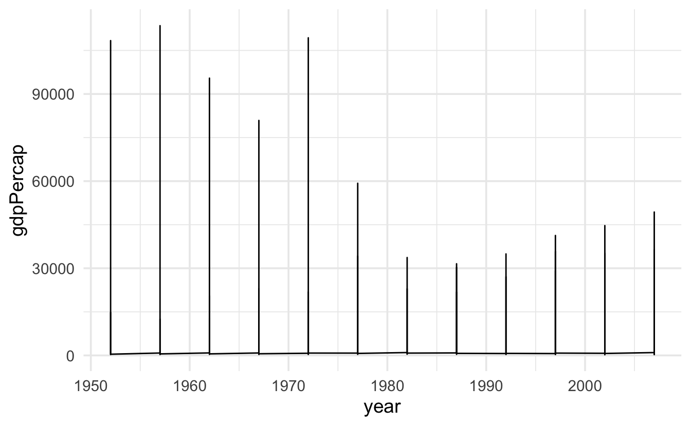
This doesn’t look right. It is trying to draw a single line for all the observations. But look at the structure of gapminder:
gapminder
## # A tibble: 1,704 × 6
## country continent year lifeExp pop gdpPercap
## <fct> <fct> <int> <dbl> <int> <dbl>
## 1 Afghanistan Asia 1952 28.8 8425333 779.
## 2 Afghanistan Asia 1957 30.3 9240934 821.
## 3 Afghanistan Asia 1962 32.0 10267083 853.
## 4 Afghanistan Asia 1967 34.0 11537966 836.
## 5 Afghanistan Asia 1972 36.1 13079460 740.
## 6 Afghanistan Asia 1977 38.4 14880372 786.
## 7 Afghanistan Asia 1982 39.9 12881816 978.
## 8 Afghanistan Asia 1987 40.8 13867957 852.
## 9 Afghanistan Asia 1992 41.7 16317921 649.
## 10 Afghanistan Asia 1997 41.8 22227415 635.
## # … with 1,694 more rowsIt is one-row-per-country-per-year. We use group to identify the column that tells us this structure so we draw one line per country.
p <- ggplot(data = gapminder, mapping = aes(
x = year,
y = gdpPercap
))
p + geom_line(mapping = aes(group = country))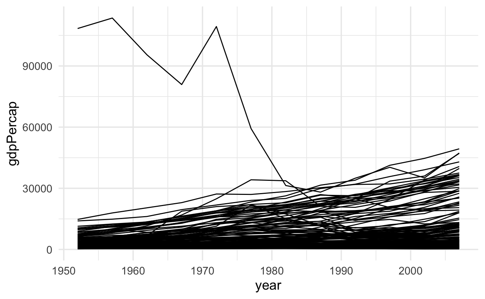
p <- ggplot(
data = gapminder,
mapping = aes(
x = year,
y = gdpPercap
)
)
p + geom_line(
mapping =
aes(group = country)
) +
facet_wrap(~continent)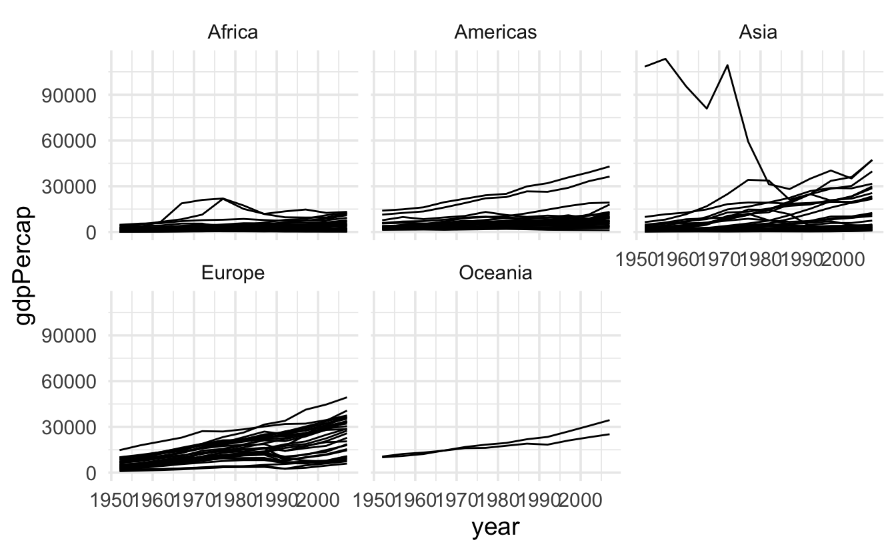
A facet is not a geom. It is a way of arranging geoms. Facet’s use R’s formula syntax. Read the ~ as “on” or “by”.
p + geom_line(
color = "gray70",
mapping = aes(group = country)
) +
geom_smooth(
size = 1.1,
method = "loess",
se = FALSE
) +
scale_y_log10(labels = scales::dollar) +
facet_wrap(~continent, ncol = 5) +
labs(
x = "Year",
y = "GDP per capita",
title = "GDP per capita on Five Continents"
)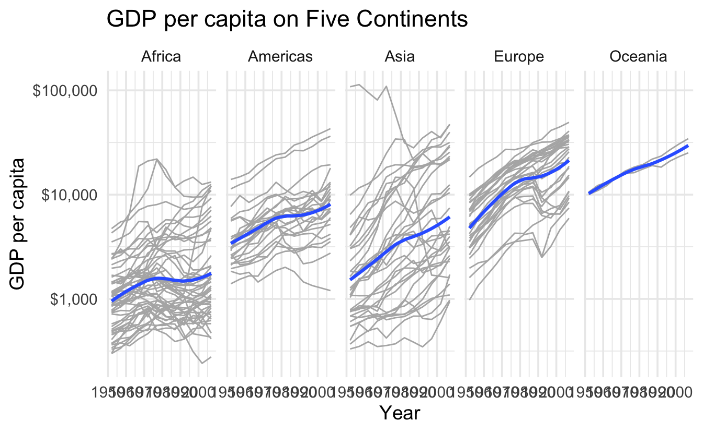
The labs() function lets you name labels, title, subtitle, etc.
2.3 Geoms can transform data
gss_sm
## # A tibble: 2,867 × 32
## year id ballot age childs sibs degree race sex region income16
## <dbl> <dbl> <labelled> <dbl> <dbl> <labe> <fct> <fct> <fct> <fct> <fct>
## 1 2016 1 1 47 3 2 Bache… White Male New E… $170000…
## 2 2016 2 2 61 0 3 High … White Male New E… $50000 …
## 3 2016 3 3 72 2 3 Bache… White Male New E… $75000 …
## 4 2016 4 1 43 4 3 High … White Fema… New E… $170000…
## 5 2016 5 3 55 2 2 Gradu… White Fema… New E… $170000…
## 6 2016 6 2 53 2 2 Junio… White Fema… New E… $60000 …
## 7 2016 7 1 50 2 2 High … White Male New E… $170000…
## 8 2016 8 3 23 3 6 High … Other Fema… Middl… $30000 …
## 9 2016 9 1 45 3 5 High … Black Male Middl… $60000 …
## 10 2016 10 3 71 4 1 Junio… White Male Middl… $60000 …
## # … with 2,857 more rows, and 21 more variables: relig <fct>, marital <fct>,
## # padeg <fct>, madeg <fct>, partyid <fct>, polviews <fct>, happy <fct>,
## # partners <fct>, grass <fct>, zodiac <fct>, pres12 <labelled>,
## # wtssall <dbl>, income_rc <fct>, agegrp <fct>, ageq <fct>, siblings <fct>,
## # kids <fct>, religion <fct>, bigregion <fct>, partners_rc <fct>, obama <dbl>gss_sm contains a subset of General Social Survey questions from 2016.
count(x = gss_sm, religion)
## # A tibble: 6 × 2
## religion n
## <fct> <int>
## 1 Protestant 1371
## 2 Catholic 649
## 3 Jewish 51
## 4 None 619
## 5 Other 159
## 6 <NA> 18p <- ggplot(
data = gss_sm,
mapping = aes(x = bigregion)
)
p + geom_bar()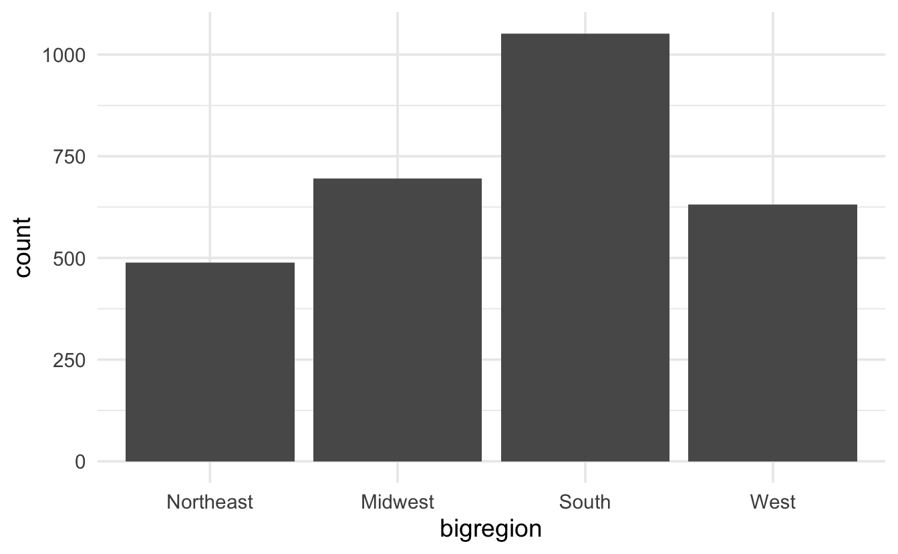
The y-axis variable count is not in the data. Instead, ggplot has calculated it for us. It does this by using the default stat_*() function associated with geom_bar(), stat_count(). This function can compute two new variables, count and prop (short for proportion). The count statistic is the default one used.
p <- ggplot(
data = gss_sm,
mapping = aes(x = bigregion)
)
p + geom_bar(mapping = aes(y = stat(prop)))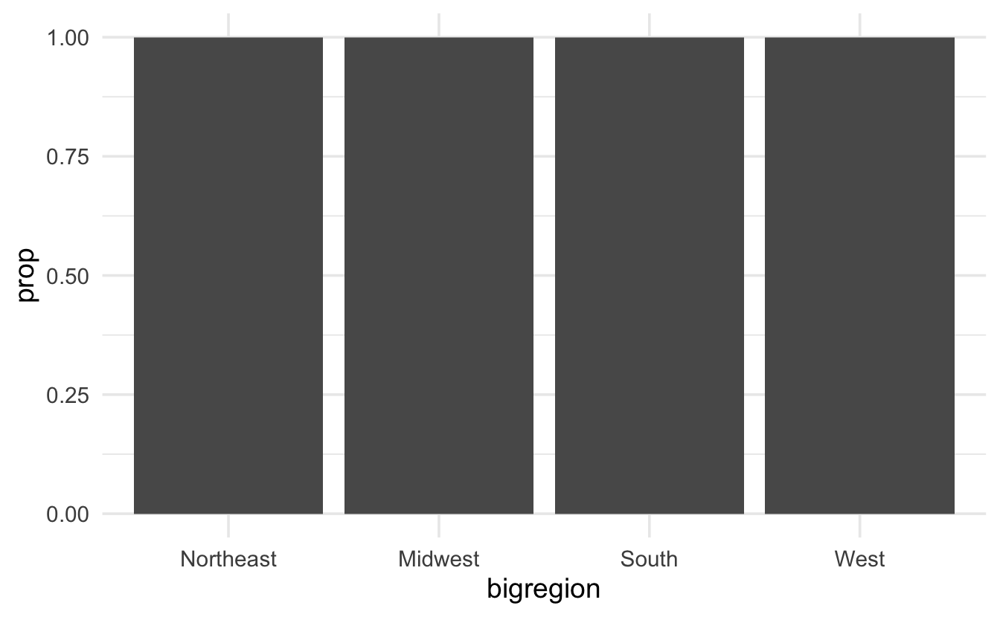
p <- ggplot(
data = gss_sm,
mapping = aes(x = bigregion)
)
p + geom_bar(mapping = aes(y = stat(prop), group = 1))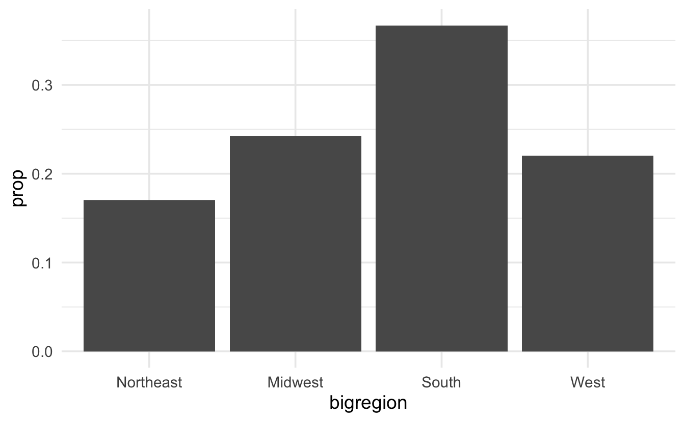
By default stat(prop) is calculated within each bar. If you want to calculate the proportion of all the rows in the data frame, add group = 1.
2.4 geom_*() functions call their default stat_*() functions behind the scenes
p + geom_bar()
p + stat_count()2.4.1 Color in a bar chart
If you want to use color as an aesthetic to communicate additional information in a bar chart, pass it using the fill aesthetic. color defines the border of the bar.
p <- ggplot(
data = gss_sm,
mapping = aes(x = religion)
)
p + geom_bar()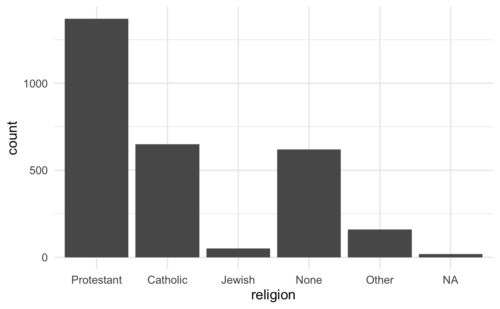
p <- ggplot(
data = gss_sm,
mapping = aes(x = religion, color = religion)
)
p + geom_bar()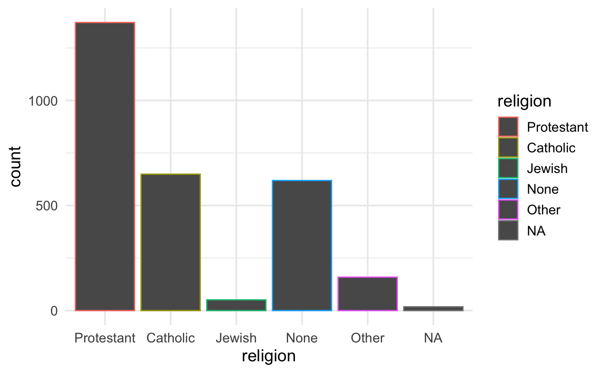
p <- ggplot(
data = gss_sm,
mapping = aes(x = religion, fill = religion)
)
p + geom_bar()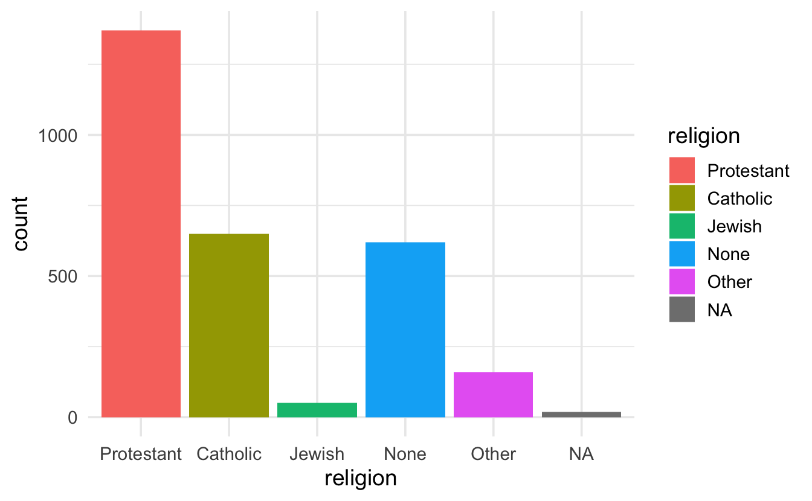
p <- ggplot(
data = gss_sm,
mapping = aes(x = religion, fill = religion)
)
p + geom_bar() + guides(fill = FALSE)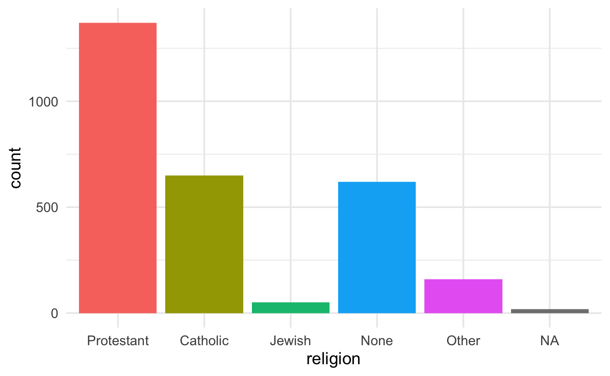
2.5 Histograms and kernel densities
midwest
## # A tibble: 437 × 28
## PID county state area poptotal popdensity popwhite popblack popamerindian
## <int> <chr> <chr> <dbl> <int> <dbl> <int> <int> <int>
## 1 561 ADAMS IL 0.052 66090 1271. 63917 1702 98
## 2 562 ALEXAN… IL 0.014 10626 759 7054 3496 19
## 3 563 BOND IL 0.022 14991 681. 14477 429 35
## 4 564 BOONE IL 0.017 30806 1812. 29344 127 46
## 5 565 BROWN IL 0.018 5836 324. 5264 547 14
## 6 566 BUREAU IL 0.05 35688 714. 35157 50 65
## 7 567 CALHOUN IL 0.017 5322 313. 5298 1 8
## 8 568 CARROLL IL 0.027 16805 622. 16519 111 30
## 9 569 CASS IL 0.024 13437 560. 13384 16 8
## 10 570 CHAMPA… IL 0.058 173025 2983. 146506 16559 331
## # … with 427 more rows, and 19 more variables: popasian <int>, popother <int>,
## # percwhite <dbl>, percblack <dbl>, percamerindan <dbl>, percasian <dbl>,
## # percother <dbl>, popadults <int>, perchsd <dbl>, percollege <dbl>,
## # percprof <dbl>, poppovertyknown <int>, percpovertyknown <dbl>,
## # percbelowpoverty <dbl>, percchildbelowpovert <dbl>, percadultpoverty <dbl>,
## # percelderlypoverty <dbl>, inmetro <int>, category <chr>midwest contains county-level census data for Midwestern states.
p <- ggplot(
data = midwest,
mapping = aes(x = area)
)
p + geom_histogram()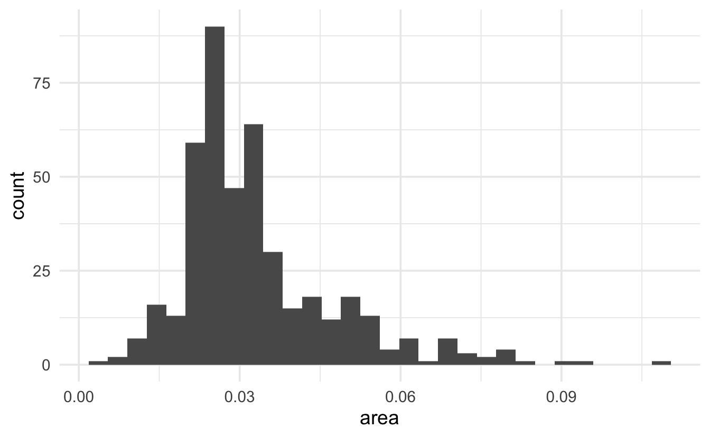
The default stat for this geom has to make a choice, so the message is letting us know we might want to override it.
p <- ggplot(
data = midwest,
mapping = aes(x = area)
)
p + geom_histogram(bins = 10)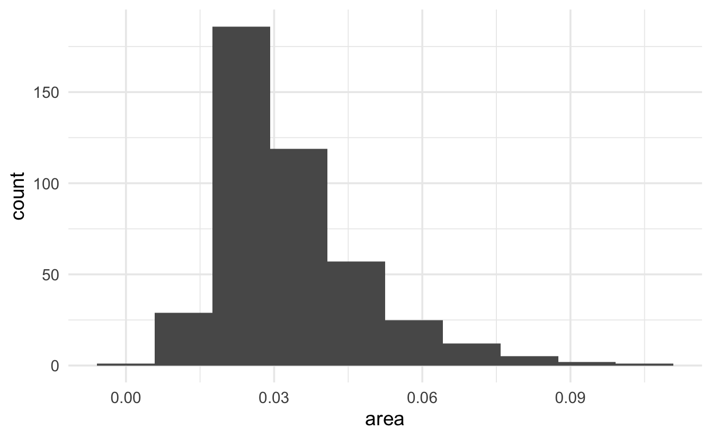
2.5.1 Subsetting data on the fly
oh_wi <- c("OH", "WI")
p <- ggplot(
data = filter(midwest, state %in% oh_wi),
mapping = aes(x = percollege, fill = state)
)
p + geom_histogram(
position = "identity",
alpha = 0.4, bins = 20
)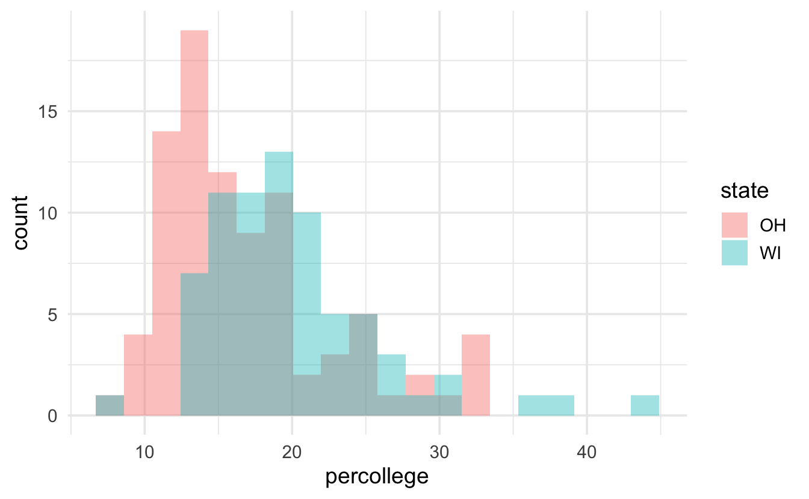
While this can be done, it is somewhat challenging to read intuitively. You must use alpha to incorporate transparency otherwise all hope at interpreting is lost.
Alternatively, you could use a continuous counterpart, geom_density().
p <- ggplot(
data = midwest,
mapping = aes(x = area)
)
p + geom_density()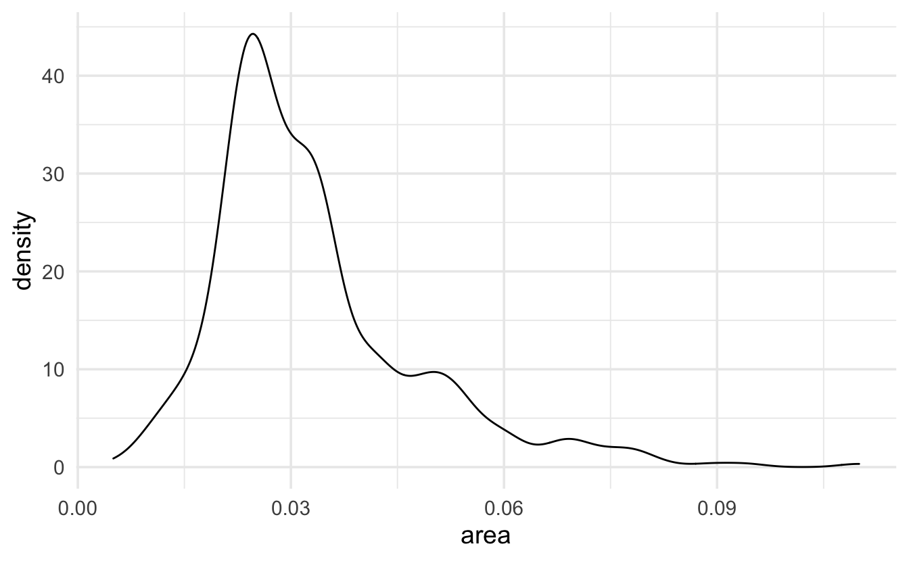
p <- ggplot(
data = midwest,
mapping = aes(
x = area,
fill = state,
color = state
)
)
p + geom_density(alpha = 0.3)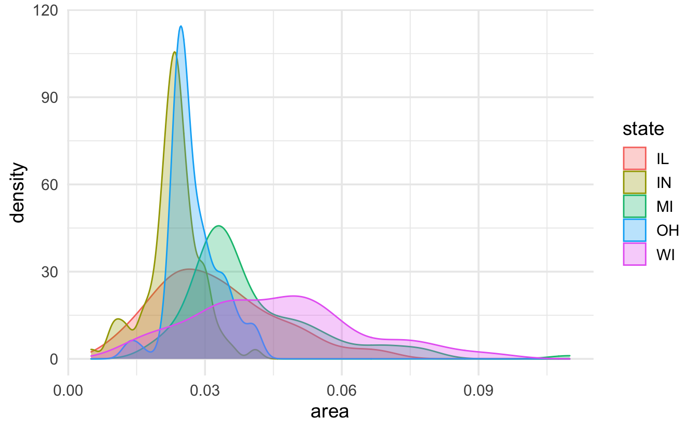
2.6 Avoiding transformations when necessary
Sometimes no transformation is necessary. Consider the titanic dataset
titanic
## fate sex n percent
## 1 perished male 1364 62.0
## 2 perished female 126 5.7
## 3 survived male 367 16.7
## 4 survived female 344 15.6Here the data has already been summarized. What if we want to make a bar chart?
p <- ggplot(
data = titanic,
mapping = aes(
x = fate,
y = percent,
fill = sex
)
)
p + geom_bar(
stat = "identity",
position = "dodge"
) + theme(legend.position = "top")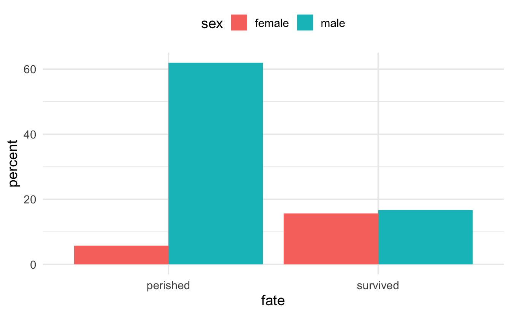
Even more conveniently, use geom_col()
p <- ggplot(data = titanic, mapping = aes(
x = fate,
y = percent,
fill = sex
))
p + geom_col(position = "dodge") + theme(legend.position = "top")
oecd_sum
## # A tibble: 57 × 5
## # Groups: year [57]
## year other usa diff hi_lo
## <int> <dbl> <dbl> <dbl> <chr>
## 1 1960 68.6 69.9 1.30 Below
## 2 1961 69.2 70.4 1.20 Below
## 3 1962 68.9 70.2 1.30 Below
## 4 1963 69.1 70 0.900 Below
## 5 1964 69.5 70.3 0.800 Below
## 6 1965 69.6 70.3 0.700 Below
## 7 1966 69.9 70.3 0.400 Below
## 8 1967 70.1 70.7 0.600 Below
## 9 1968 70.1 70.4 0.300 Below
## 10 1969 70.1 70.6 0.5 Below
## # … with 47 more rows
p <- ggplot(
data = oecd_sum,
mapping = aes(x = year, y = diff, fill = hi_lo)
)
p + geom_col() + guides(fill = FALSE) + labs(
x = NULL, y = "Difference in Years",
title = "The US Life Expectancy Gap", subtitle = "Difference between US and OECD
average life expectancies, 1960-2015",
caption = "Data: OECD. After a chart by Christopher Ingraham,
Washington Post, December 27th 2017."
)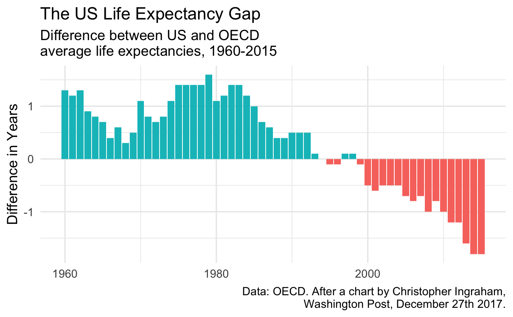
2.7 Cross-tabulation the awkward way
More commonly, we would add color to a bar graph to cross-classify two categorical variables. This is the graphical equivalent of a frequency table. We can do this directly within ggplot(), however it is also more convoluted.
Consider examining religious preference by census region.
ggplot(
data = gss_sm,
mapping = aes(
x = bigregion,
fill = religion
)
) +
geom_bar()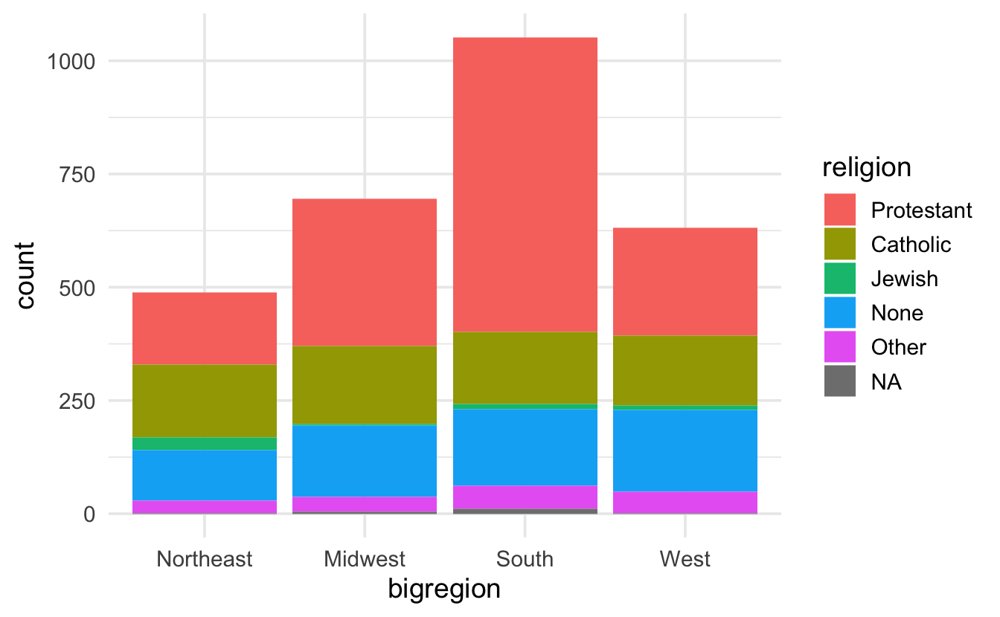
By default we get a stacked bar chart. If we want to make comparisons easier, we could convert this to a proportional bar chart.
ggplot(
data = gss_sm,
mapping = aes(
x = bigregion,
fill = religion
)
) +
geom_bar(position = "fill")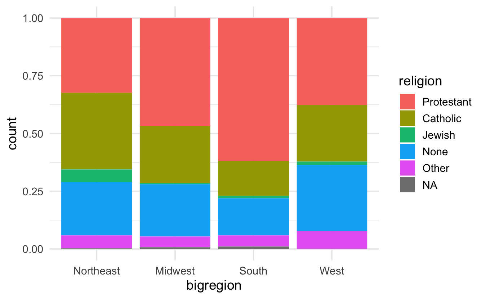
Now all the bars are the same height, but we lost the ability to see the relative size of each region with respect to the overall total. What if we wanted to show the proportion of religions within regions of the country, but instead of stacking the bars we want separate bars? The first attempt may use position = "dodge".
ggplot(
data = gss_sm,
mapping = aes(
x = bigregion,
fill = religion
)
) +
geom_bar(position = "dodge")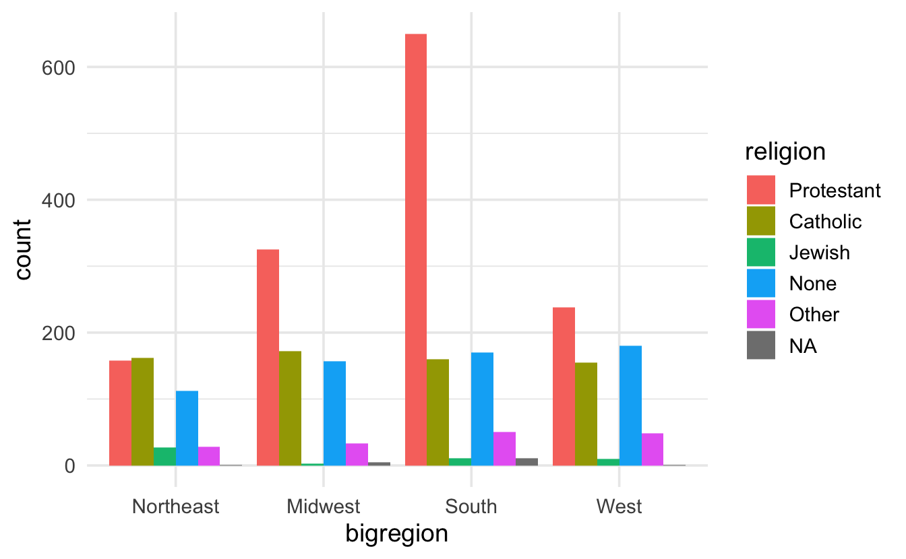
Good structure, but we’re back to counts. Let’s directly map the stat(prop) variable to the y aesthetic as well to preserve the proportion on the y-axis.
ggplot(
data = gss_sm,
mapping = aes(
x = bigregion,
fill = religion
)
) +
geom_bar(mapping = aes(y = stat(prop)), position = "dodge")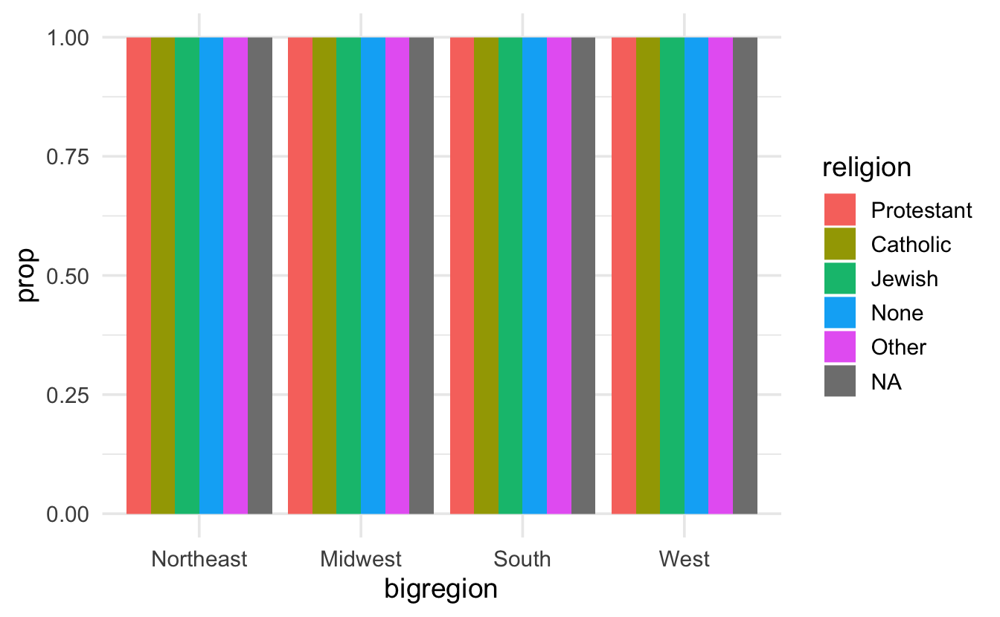
Still not correct. Same problem as before. Each individual bar sums to 1. If we want overall proportions for a single variable, we mapped group = 1. What if we do that here but with respect to religion?
ggplot(
data = gss_sm,
mapping = aes(
x = bigregion,
fill = religion
)
) +
geom_bar(mapping = aes(
y = stat(prop),
group = religion
), position = "dodge")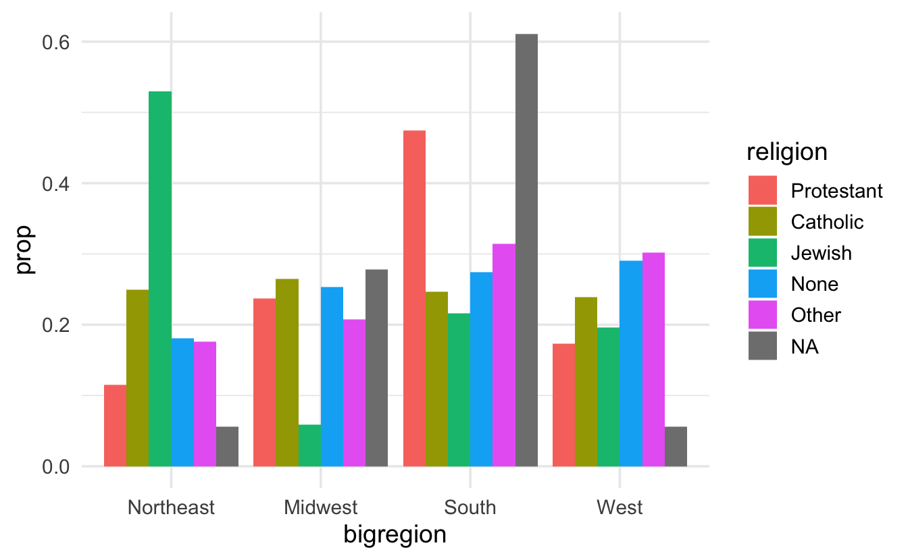
Looks better, but we still have a problem. Bars within a single region do not sum to 1. Instead, bars for any particular religion sum to 1.
ggplot(
data = gss_sm,
mapping = aes(x = religion)
) +
geom_bar(mapping = aes(
y = stat(prop),
group = bigregion
), position = "dodge") +
facet_wrap(~bigregion)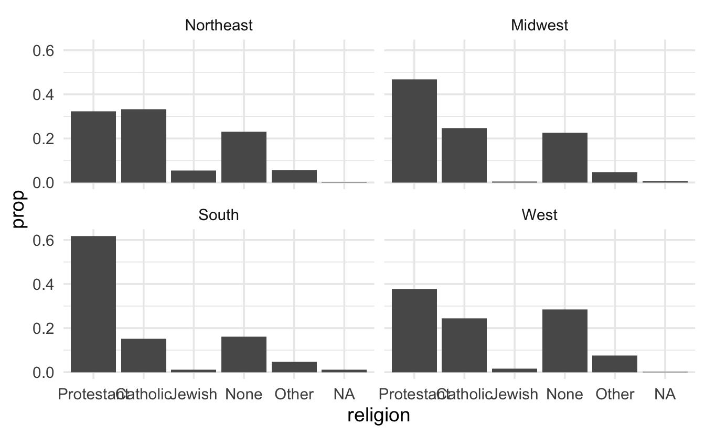
The easiest approach is to use facet_wrap() and not force geom_bar() and stat_count() to do all the work in a single step. Instead, we can ask ggplot() to give us a proportional bar chart of religious affiliation, and then facet that by region. The proportions are calculated within each panel, which is the breakdown we wanted. This has the added advantage of not producing too many bars within each category.
2.7.1 Calculate manually
Rather than doing all the summarizing in ggplot(), we could instead calculate the frequencies and proportions manually using dplyr functions first, then use the summarized data frame as the basis for the bar graph.
glimpse(gss_sm)
## Rows: 2,867
## Columns: 32
## $ year <dbl> 2016, 2016, 2016, 2016, 2016, 2016, 2016, 2016, 2016, 2016…
## $ id <dbl> 1, 2, 3, 4, 5, 6, 7, 8, 9, 10, 11, 12, 13, 14, 15, 16, 17,…
## $ ballot <labelled> 1, 2, 3, 1, 3, 2, 1, 3, 1, 3, 2, 1, 2, 3, 2, 3, 3, 2,…
## $ age <dbl> 47, 61, 72, 43, 55, 53, 50, 23, 45, 71, 33, 86, 32, 60, 76…
## $ childs <dbl> 3, 0, 2, 4, 2, 2, 2, 3, 3, 4, 5, 4, 3, 5, 7, 2, 6, 5, 0, 2…
## $ sibs <labelled> 2, 3, 3, 3, 2, 2, 2, 6, 5, 1, 4, 4, 3, 6, 0, 1, 3, 8,…
## $ degree <fct> Bachelor, High School, Bachelor, High School, Graduate, Ju…
## $ race <fct> White, White, White, White, White, White, White, Other, Bl…
## $ sex <fct> Male, Male, Male, Female, Female, Female, Male, Female, Ma…
## $ region <fct> New England, New England, New England, New England, New En…
## $ income16 <fct> $170000 or over, $50000 to 59999, $75000 to $89999, $17000…
## $ relig <fct> None, None, Catholic, Catholic, None, None, None, Catholic…
## $ marital <fct> Married, Never Married, Married, Married, Married, Married…
## $ padeg <fct> Graduate, Lt High School, High School, NA, Bachelor, NA, H…
## $ madeg <fct> High School, High School, Lt High School, High School, Hig…
## $ partyid <fct> "Independent", "Ind,near Dem", "Not Str Republican", "Not …
## $ polviews <fct> Moderate, Liberal, Conservative, Moderate, Slightly Libera…
## $ happy <fct> Pretty Happy, Pretty Happy, Very Happy, Pretty Happy, Very…
## $ partners <fct> NA, "1 Partner", "1 Partner", NA, "1 Partner", "1 Partner"…
## $ grass <fct> NA, Legal, Not Legal, NA, Legal, Legal, NA, Not Legal, NA,…
## $ zodiac <fct> Aquarius, Scorpio, Pisces, Cancer, Scorpio, Scorpio, Capri…
## $ pres12 <labelled> 3, 1, 2, 2, 1, 1, NA, NA, NA, 2, NA, NA, 1, 1, 2, 1, …
## $ wtssall <dbl> 0.957, 0.478, 0.957, 1.914, 1.435, 0.957, 1.435, 0.957, 0.…
## $ income_rc <fct> Gt $170000, Gt $50000, Gt $75000, Gt $170000, Gt $170000, …
## $ agegrp <fct> Age 45-55, Age 55-65, Age 65+, Age 35-45, Age 45-55, Age 4…
## $ ageq <fct> Age 34-49, Age 49-62, Age 62+, Age 34-49, Age 49-62, Age 4…
## $ siblings <fct> 2, 3, 3, 3, 2, 2, 2, 6+, 5, 1, 4, 4, 3, 6+, 0, 1, 3, 6+, 2…
## $ kids <fct> 3, 0, 2, 4+, 2, 2, 2, 3, 3, 4+, 4+, 4+, 3, 4+, 4+, 2, 4+, …
## $ religion <fct> None, None, Catholic, Catholic, None, None, None, Catholic…
## $ bigregion <fct> Northeast, Northeast, Northeast, Northeast, Northeast, Nor…
## $ partners_rc <fct> NA, 1, 1, NA, 1, 1, NA, 1, NA, 3, 1, NA, 1, NA, 0, 1, 0, N…
## $ obama <dbl> 0, 1, 0, 0, 1, 1, NA, NA, NA, 0, NA, NA, 1, 1, 0, 1, 0, 1,…
(rel_by_region <- gss_sm %>%
count(bigregion, religion) %>%
mutate(
freq = n / sum(n),
pct = round((freq * 100), 0)
) %>%
drop_na())
## # A tibble: 20 × 5
## bigregion religion n freq pct
## <fct> <fct> <int> <dbl> <dbl>
## 1 Northeast Protestant 158 0.0551 6
## 2 Northeast Catholic 162 0.0565 6
## 3 Northeast Jewish 27 0.00942 1
## 4 Northeast None 112 0.0391 4
## 5 Northeast Other 28 0.00977 1
## 6 Midwest Protestant 325 0.113 11
## 7 Midwest Catholic 172 0.0600 6
## 8 Midwest Jewish 3 0.00105 0
## 9 Midwest None 157 0.0548 5
## 10 Midwest Other 33 0.0115 1
## 11 South Protestant 650 0.227 23
## 12 South Catholic 160 0.0558 6
## 13 South Jewish 11 0.00384 0
## 14 South None 170 0.0593 6
## 15 South Other 50 0.0174 2
## 16 West Protestant 238 0.0830 8
## 17 West Catholic 155 0.0541 5
## 18 West Jewish 10 0.00349 0
## 19 West None 180 0.0628 6
## 20 West Other 48 0.0167 2Now this is easy to pass into ggplot() and draw the bar graph.
ggplot(
data = rel_by_region,
mapping = aes(
x = bigregion,
y = pct,
fill = religion
)
) +
geom_col(position = "dodge2") +
labs(x = "Region", y = "Percent", fill = "Religion") +
theme(legend.position = "top")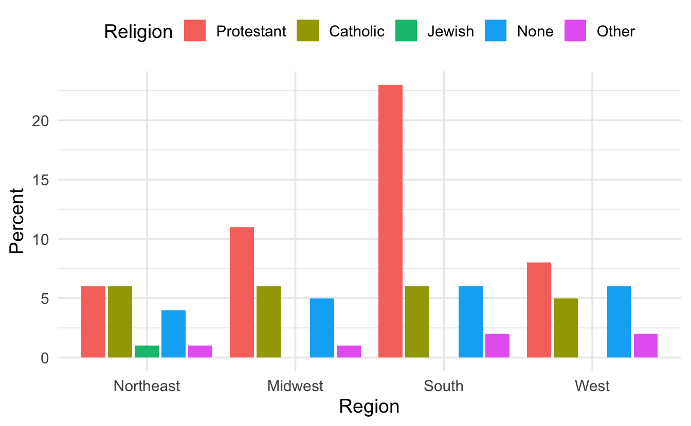
Instead of using geom_bar(), we use geom_col() because we already summarized the data - we want stat_identity(), not stat_count(). While this figure works, it is not the best we can do. It is generally crowded. Instead, let’s convert it to a faceted plot:
ggplot(
data = rel_by_region,
mapping = aes(
x = religion,
y = pct,
fill = religion
)
) +
geom_col(position = "dodge2") +
labs(x = "Region", y = "Percent", fill = "Religion") +
guides(fill = FALSE) +
coord_flip() +
facet_grid(~bigregion)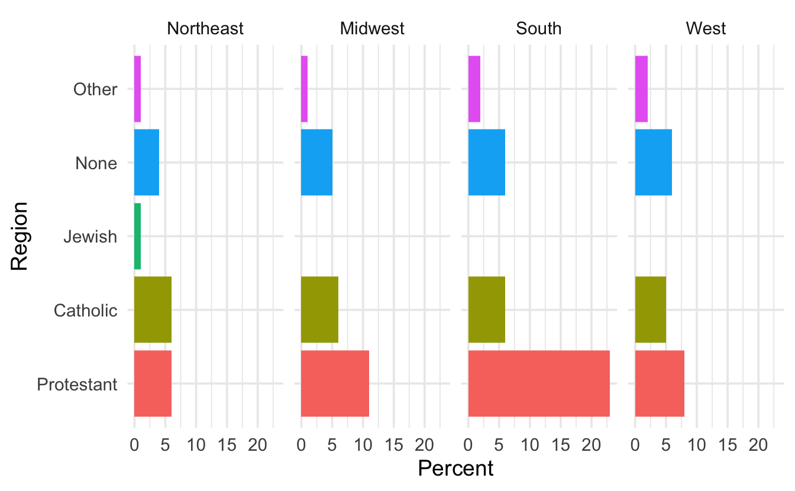
2.8 Continuous variables by group or category
glimpse(organdata)
## Rows: 238
## Columns: 21
## $ country <chr> "Australia", "Australia", "Australia", "Australia", "…
## $ year <date> NA, 1991-01-01, 1992-01-01, 1993-01-01, 1994-01-01, …
## $ donors <dbl> NA, 12.09, 12.35, 12.51, 10.25, 10.18, 10.59, 10.26, …
## $ pop <int> 17065, 17284, 17495, 17667, 17855, 18072, 18311, 1851…
## $ pop_dens <dbl> 0.220, 0.223, 0.226, 0.228, 0.231, 0.233, 0.237, 0.23…
## $ gdp <int> 16774, 17171, 17914, 18883, 19849, 21079, 21923, 2296…
## $ gdp_lag <int> 16591, 16774, 17171, 17914, 18883, 19849, 21079, 2192…
## $ health <dbl> 1300, 1379, 1455, 1540, 1626, 1737, 1846, 1948, 2077,…
## $ health_lag <dbl> 1224, 1300, 1379, 1455, 1540, 1626, 1737, 1846, 1948,…
## $ pubhealth <dbl> 4.8, 5.4, 5.4, 5.4, 5.4, 5.5, 5.6, 5.7, 5.9, 6.1, 6.2…
## $ roads <dbl> 136.6, 122.3, 112.8, 110.5, 108.0, 111.6, 107.6, 95.4…
## $ cerebvas <int> 682, 647, 630, 611, 631, 592, 576, 525, 516, 493, 474…
## $ assault <int> 21, 19, 17, 18, 17, 16, 17, 17, 16, 15, 16, 15, 14, N…
## $ external <int> 444, 425, 406, 376, 387, 371, 395, 385, 410, 409, 393…
## $ txp_pop <dbl> 0.938, 0.926, 0.915, 0.906, 0.896, 0.885, 0.874, 0.86…
## $ world <chr> "Liberal", "Liberal", "Liberal", "Liberal", "Liberal"…
## $ opt <chr> "In", "In", "In", "In", "In", "In", "In", "In", "In",…
## $ consent_law <chr> "Informed", "Informed", "Informed", "Informed", "Info…
## $ consent_practice <chr> "Informed", "Informed", "Informed", "Informed", "Info…
## $ consistent <chr> "Yes", "Yes", "Yes", "Yes", "Yes", "Yes", "Yes", "Yes…
## $ ccode <chr> "Oz", "Oz", "Oz", "Oz", "Oz", "Oz", "Oz", "Oz", "Oz",…2.8.1 Boxplots
ggplot(
data = organdata,
mapping = aes(x = country, y = donors)
) +
geom_boxplot()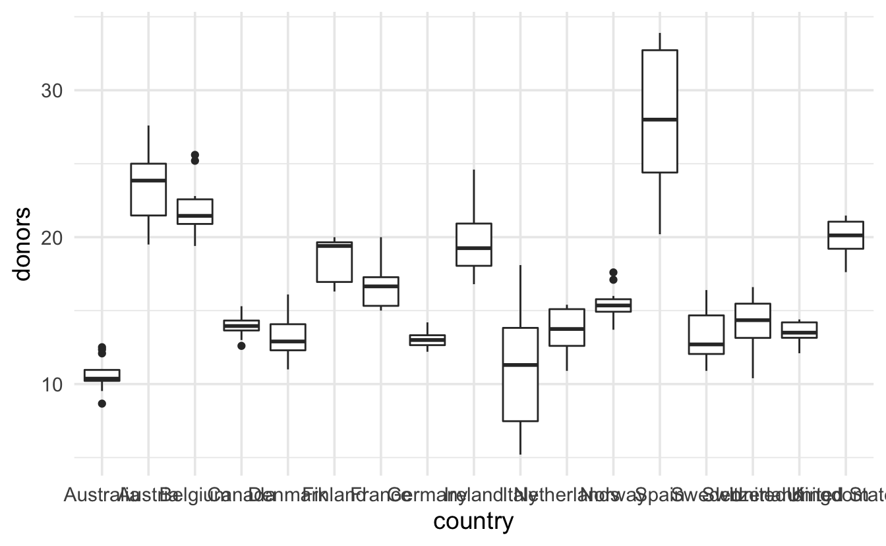
Awkward to have country labels on x-axis. Switch to y-axis.
2.8.2 coord_flip()
ggplot(
data = organdata,
mapping = aes(x = country, y = donors)
) +
geom_boxplot() +
coord_flip()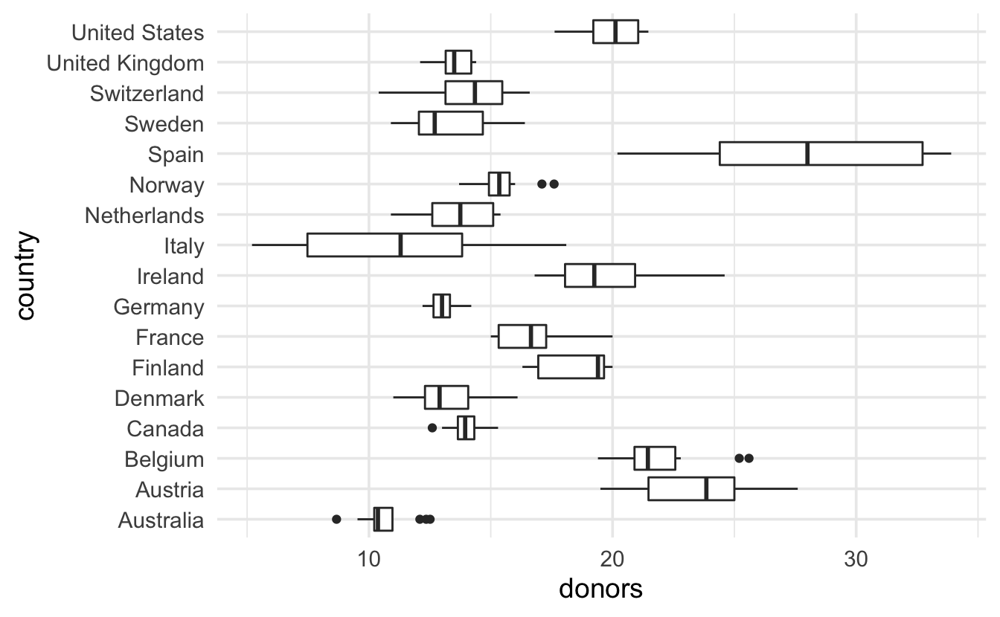
Explicit use of a coordinate transformation system.
2.8.3 reorder()
ggplot(
data = organdata,
mapping = aes(
x = reorder(country, donors, na.rm = TRUE),
y = donors
)
) +
geom_boxplot() +
labs(x = NULL) +
coord_flip()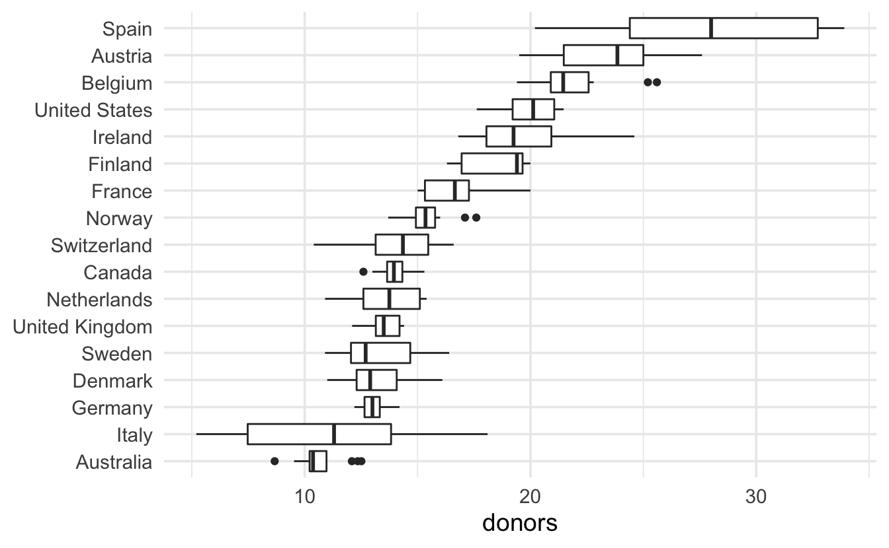
Place on a more meaningful order.
Add color aesthetic.
ggplot(
data = organdata,
mapping = aes(
x = reorder(country, donors, na.rm = TRUE),
y = donors, fill = world
)
) +
geom_boxplot() +
labs(x = NULL) +
coord_flip() +
theme(legend.position = "bottom")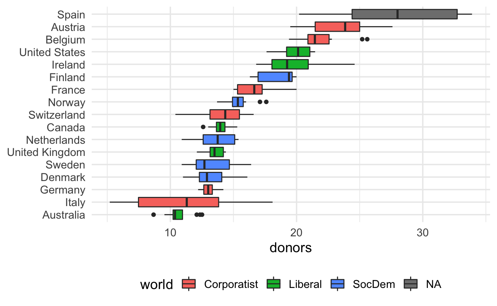
2.8.4 Strip chart
ggplot(
data = organdata,
mapping = aes(
x = reorder(country, donors, na.rm = TRUE),
y = donors, color = world
)
) +
geom_point() +
labs(x = NULL) +
coord_flip() +
theme(legend.position = "bottom")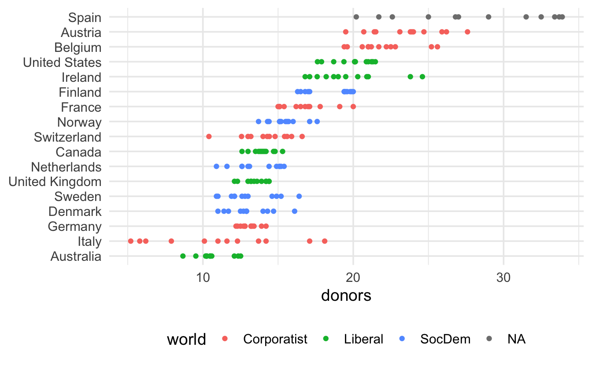
Hard to see all the points. Add jitter.
ggplot(
data = organdata,
mapping = aes(
x = reorder(country, donors, na.rm = TRUE),
y = donors, color = world
)
) +
geom_jitter() +
labs(x = NULL) +
coord_flip() +
theme(legend.position = "bottom")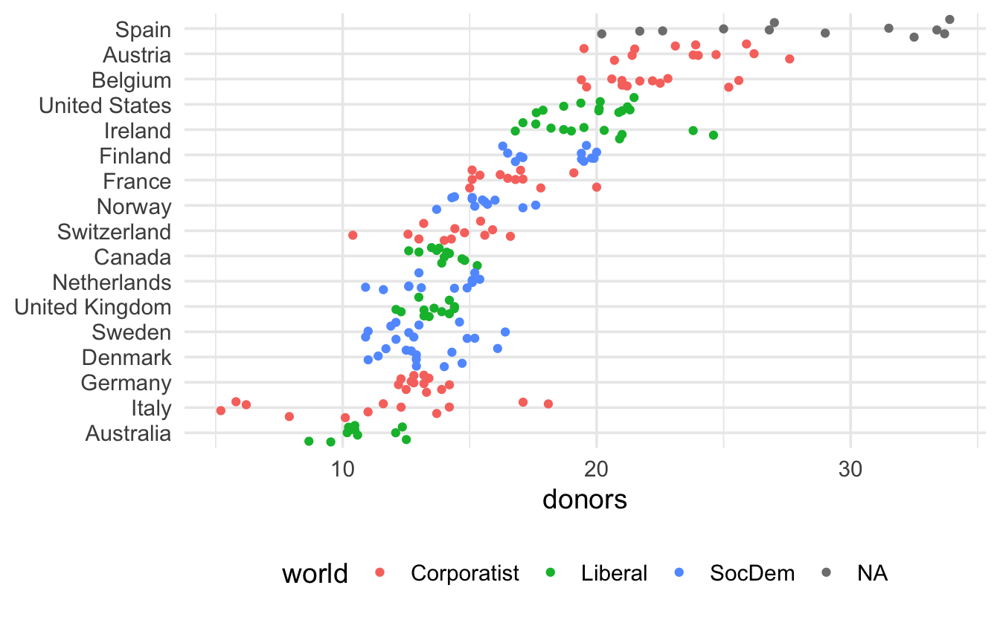
2.8.5 Cleveland dotplot
2.8.5.1 Calculate summary statistics
(by_country <- organdata %>%
group_by(consent_law, country) %>%
summarize(
donors_mean = mean(donors, na.rm = TRUE),
donors_sd = sd(donors, na.rm = TRUE),
gdp_mean = mean(gdp, na.rm = TRUE),
health_mean = mean(health, na.rm = TRUE),
roads_mean = mean(roads, na.rm = TRUE),
cerebvas_mean = mean(cerebvas, na.rm = TRUE)
))
## # A tibble: 17 × 8
## # Groups: consent_law [2]
## consent_law country donors_mean donors_sd gdp_mean health_mean roads_mean
## <chr> <chr> <dbl> <dbl> <dbl> <dbl> <dbl>
## 1 Informed Australia 10.6 1.14 22179. 1958. 105.
## 2 Informed Canada 14.0 0.751 23711. 2272. 109.
## 3 Informed Denmark 13.1 1.47 23722. 2054. 102.
## 4 Informed Germany 13.0 0.611 22163. 2349. 113.
## 5 Informed Ireland 19.8 2.48 20824. 1480. 118.
## 6 Informed Netherlands 13.7 1.55 23013. 1993. 76.1
## 7 Informed United Kin… 13.5 0.775 21359. 1561. 67.9
## 8 Informed United Sta… 20.0 1.33 29212. 3988. 155.
## 9 Presumed Austria 23.5 2.42 23876. 1875. 150.
## 10 Presumed Belgium 21.9 1.94 22500. 1958. 155.
## 11 Presumed Finland 18.4 1.53 21019. 1615. 93.6
## 12 Presumed France 16.8 1.60 22603. 2160. 156.
## 13 Presumed Italy 11.1 4.28 21554. 1757 122.
## 14 Presumed Norway 15.4 1.11 26448. 2217. 70.0
## 15 Presumed Spain 28.1 4.96 16933 1289. 161.
## 16 Presumed Sweden 13.1 1.75 22415. 1951. 72.3
## 17 Presumed Switzerland 14.2 1.71 27233 2776. 96.4
## # … with 1 more variable: cerebvas_mean <dbl>Better approach using efficient code.
(by_country <- organdata %>%
group_by(consent_law, country) %>%
summarize(across(where(is.numeric), list(mean = mean, sd = sd), na.rm = TRUE)) %>%
ungroup())
## # A tibble: 17 × 28
## consent_law country donors_mean donors_sd pop_mean pop_sd pop_dens_mean
## <chr> <chr> <dbl> <dbl> <dbl> <dbl> <dbl>
## 1 Informed Australia 10.6 1.14 18318. 8.31e2 0.237
## 2 Informed Canada 14.0 0.751 29608. 1.19e3 0.297
## 3 Informed Denmark 13.1 1.47 5257. 8.06e1 12.2
## 4 Informed Germany 13.0 0.611 80255. 5.16e3 22.5
## 5 Informed Ireland 19.8 2.48 3674. 1.32e2 5.23
## 6 Informed Netherlands 13.7 1.55 15548. 3.73e2 37.4
## 7 Informed United Kingd… 13.5 0.775 58187. 6.26e2 24.0
## 8 Informed United States 20.0 1.33 269330. 1.25e4 2.80
## 9 Presumed Austria 23.5 2.42 7927. 1.09e2 9.45
## 10 Presumed Belgium 21.9 1.94 10153. 1.09e2 30.7
## 11 Presumed Finland 18.4 1.53 5112. 6.86e1 1.51
## 12 Presumed France 16.8 1.60 58056. 8.51e2 10.5
## 13 Presumed Italy 11.1 4.28 57360. 4.25e2 19.0
## 14 Presumed Norway 15.4 1.11 4386. 9.73e1 1.35
## 15 Presumed Spain 28.1 4.96 39666. 9.51e2 7.84
## 16 Presumed Sweden 13.1 1.75 8789. 1.14e2 1.95
## 17 Presumed Switzerland 14.2 1.71 7037. 1.70e2 17.0
## # … with 21 more variables: pop_dens_sd <dbl>, gdp_mean <dbl>, gdp_sd <dbl>,
## # gdp_lag_mean <dbl>, gdp_lag_sd <dbl>, health_mean <dbl>, health_sd <dbl>,
## # health_lag_mean <dbl>, health_lag_sd <dbl>, pubhealth_mean <dbl>,
## # pubhealth_sd <dbl>, roads_mean <dbl>, roads_sd <dbl>, cerebvas_mean <dbl>,
## # cerebvas_sd <dbl>, assault_mean <dbl>, assault_sd <dbl>,
## # external_mean <dbl>, external_sd <dbl>, txp_pop_mean <dbl>,
## # txp_pop_sd <dbl>2.8.5.2 Draw the plot
ggplot(
data = by_country,
mapping = aes(
x = donors_mean,
y = reorder(country, donors_mean),
color = consent_law
)
) +
geom_point(size = 3) +
labs(
x = "Donor Procurement Rate",
y = "", color = "Consent Law"
) +
theme(legend.position = "top")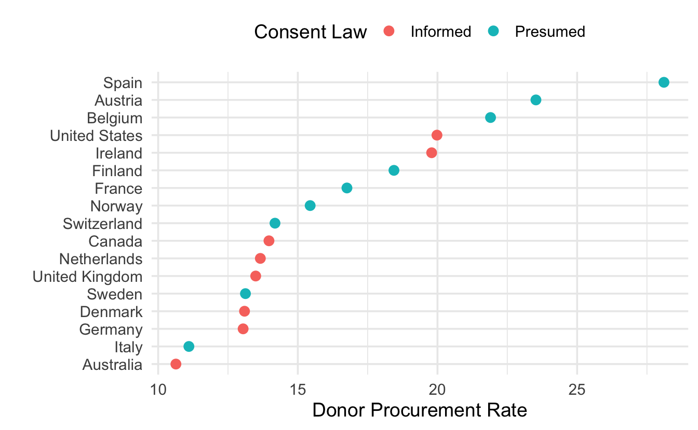
2.8.5.3 Use facet instead of color
ggplot(
data = by_country,
mapping = aes(
x = donors_mean,
y = reorder(country, donors_mean)
)
) +
geom_point(size = 3) +
facet_wrap(~consent_law, ncol = 1) +
labs(
x = "Donor Procurement Rate",
y = "", color = "Consent Law"
)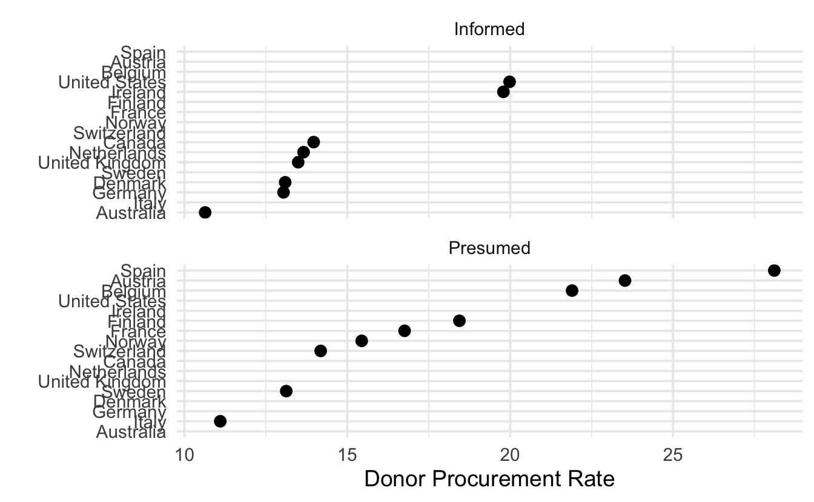
ggplot(
data = by_country,
mapping = aes(
x = donors_mean,
y = reorder(country, donors_mean)
)
) +
geom_point(size = 3) +
facet_wrap(~consent_law, scales = "free_y", ncol = 1) +
labs(
x = "Donor Procurement Rate",
y = "", color = "Consent Law"
)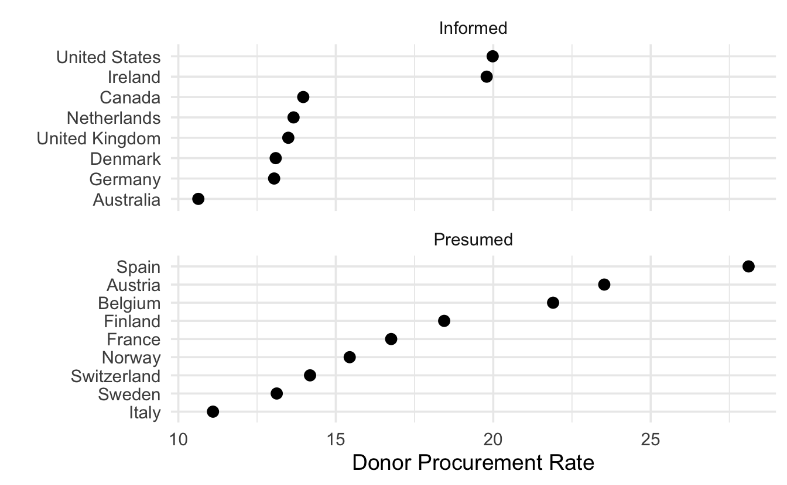
Allow the \(y\)-axis to vary and only include matching countries.
2.8.5.4 Add standard deviation
ggplot(
data = by_country,
mapping = aes(
x = reorder(country, donors_mean),
y = donors_mean
)
) +
geom_pointrange(mapping = aes(
ymin = donors_mean - donors_sd,
ymax = donors_mean + donors_sd
)) +
labs(
x = "",
y = "Donor Procurement Rate"
) +
coord_flip()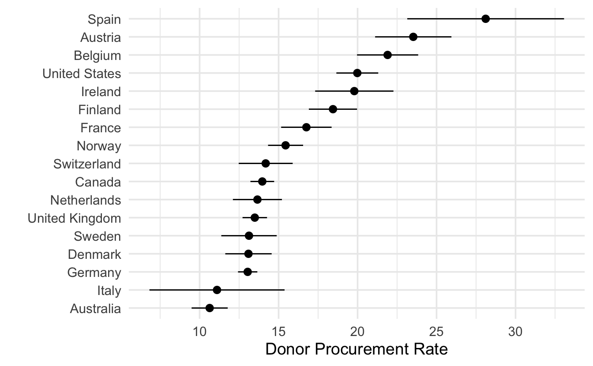
2.9 Plot text directly
2.9.1 geom_text()
ggplot(
data = by_country,
mapping = aes(
x = roads_mean,
y = donors_mean
)
) +
geom_point() +
geom_text(mapping = aes(label = country))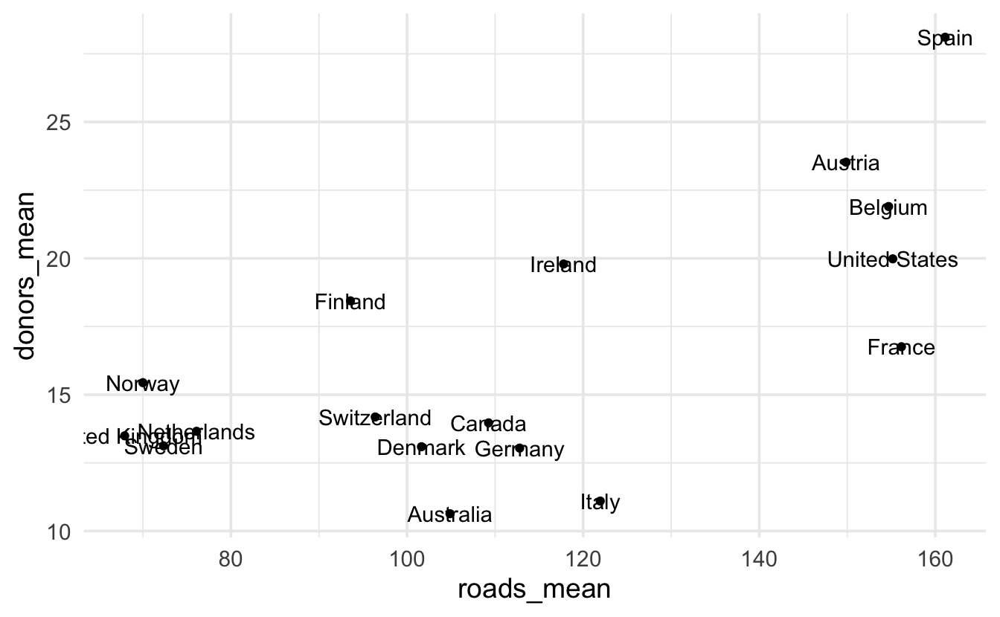
ggplot(
data = by_country,
mapping = aes(
x = roads_mean,
y = donors_mean
)
) +
geom_point() +
geom_text(mapping = aes(label = country), hjust = 0)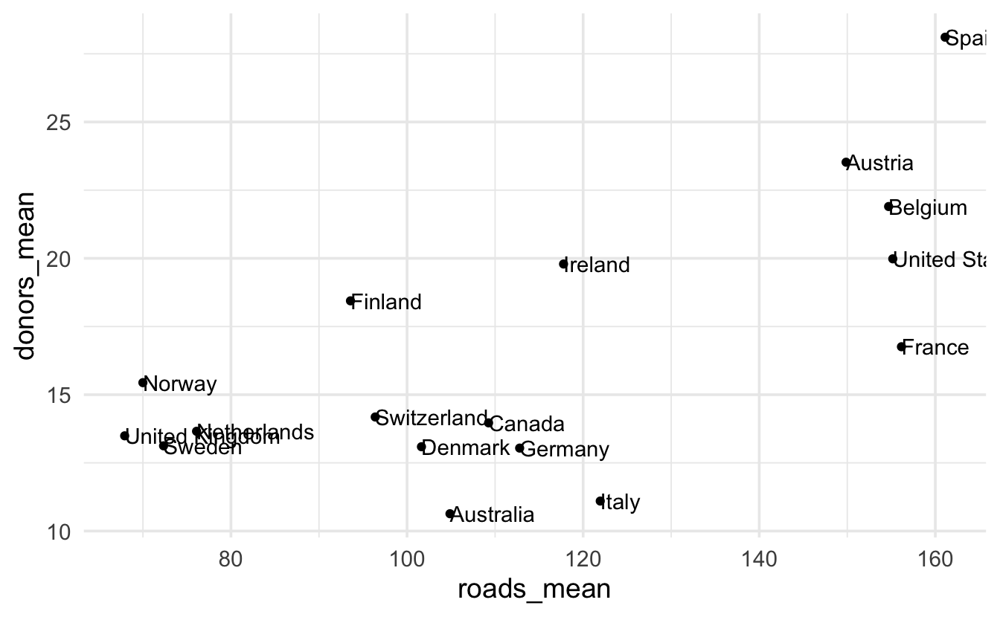
2.10 ggrepel::geom_text_repel()
elections_historic %>%
select(2:7)
## # A tibble: 49 × 6
## year winner win_party ec_pct popular_pct popular_margin
## <int> <chr> <chr> <dbl> <dbl> <dbl>
## 1 1824 John Quincy Adams D.-R. 0.322 0.309 -0.104
## 2 1828 Andrew Jackson Dem. 0.682 0.559 0.122
## 3 1832 Andrew Jackson Dem. 0.766 0.547 0.178
## 4 1836 Martin Van Buren Dem. 0.578 0.508 0.142
## 5 1840 William Henry Harrison Whig 0.796 0.529 0.0605
## 6 1844 James Polk Dem. 0.618 0.495 0.0145
## 7 1848 Zachary Taylor Whig 0.562 0.473 0.0479
## 8 1852 Franklin Pierce Dem. 0.858 0.508 0.0695
## 9 1856 James Buchanan Dem. 0.588 0.453 0.122
## 10 1860 Abraham Lincoln Rep. 0.594 0.396 0.101
## # … with 39 more rowsp_title <- "Presidential Elections: Popular & Electoral College Margins"
p_subtitle <- "1824-2016"
p_caption <- "Data for 2016 are provisional."
x_label <- "Winner's share of Popular Vote"
y_label <- "Winner's share of Electoral College Votes"
library(ggrepel)
ggplot(data = elections_historic, mapping = aes(
x = popular_pct,
y = ec_pct,
label = winner_label
)) +
geom_hline(yintercept = 0.5, size = 1.4, color = "gray80") +
geom_vline(xintercept = 0.5, size = 1.4, color = "gray80") +
geom_point() +
geom_text_repel() +
scale_x_continuous(labels = scales::percent) +
scale_y_continuous(labels = scales::percent) +
labs(
x = x_label, y = y_label, title = p_title, subtitle = p_subtitle,
caption = p_caption
)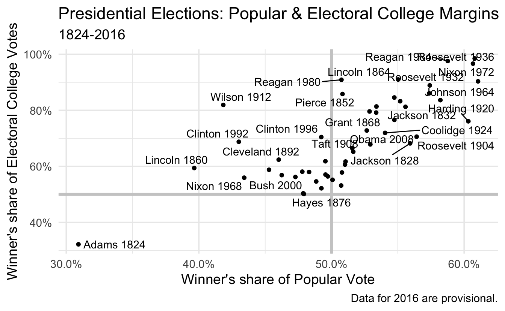
2.10.1 Label outliers only
ggplot(
data = by_country,
mapping = aes(x = gdp_mean, y = health_mean)
) +
geom_point() +
geom_text_repel(
data = filter(by_country, gdp_mean > 25000),
mapping = aes(label = country)
)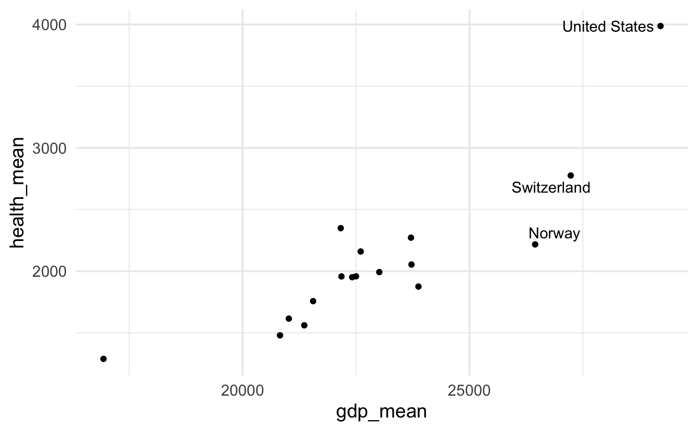
ggplot(
data = by_country,
mapping = aes(x = gdp_mean, y = health_mean)
) +
geom_point() +
geom_text_repel(
data = filter(
by_country,
gdp_mean > 25000 | health_mean < 1500 |
country %in% "Belgium"
),
mapping = aes(label = country)
)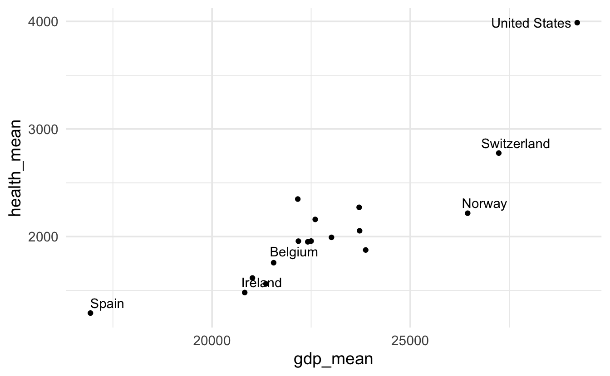
2.11 Scales, guides, and themes
p <- ggplot(
data = gapminder,
mapping =
aes(
x = gdpPercap,
y = lifeExp,
color = continent, fill = continent
)
)
p + geom_point() +
geom_smooth(method = "loess") +
scale_x_log10()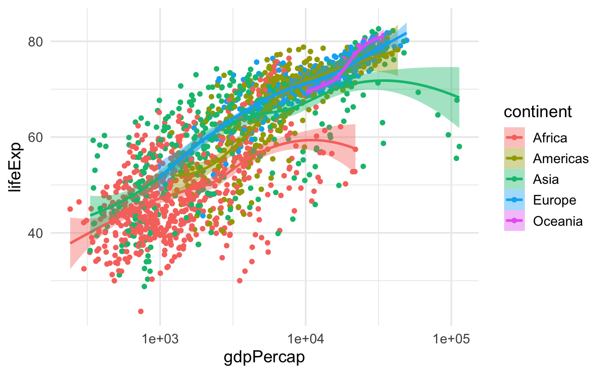
Scale functions control scale mappings in geoms. Remember: not just x and y but also color, fill, shape, and size are scales. They visually represent quantities or categories in your data – thus, they have a scale associated with that
representation. This means you control things like color schemes for data mappings through scale functions.
scale_<MAPPING>_<KIND>()
scale_x_continuous()
scale_y_continuous()
scale_x_discrete()
scale_y_discrete()
scale_x_log10()
scale_x_sqrt()2.11.1 Labels, breaks, and limits
p <- ggplot(
data = organdata,
mapping = aes(
x = roads,
y = donors, color = world
)
)
p + geom_point() +
scale_x_log10() + scale_y_continuous(
breaks = c(5, 15, 25),
labels = c("Five", "Fifteen", "Twenty Five")
)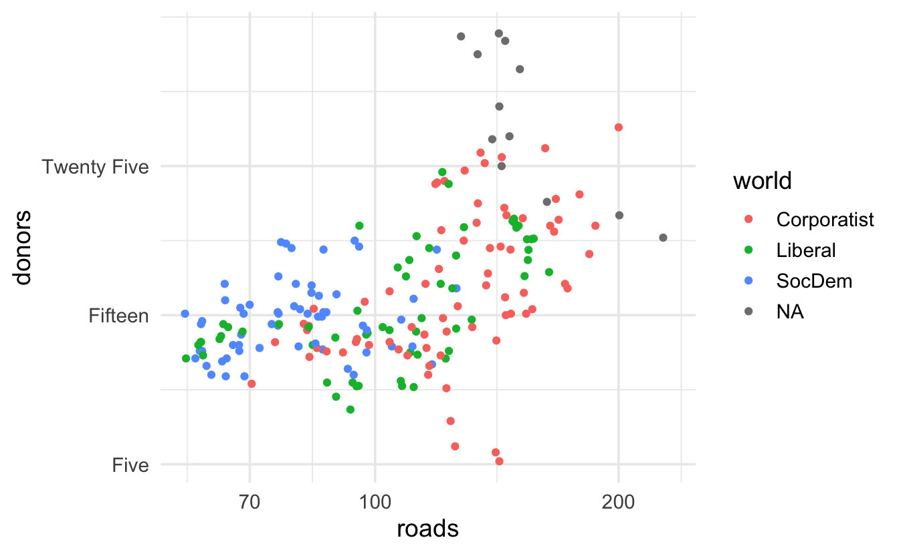
p <- ggplot(
data = organdata,
mapping = aes(
x = roads,
y = donors, color = world
)
)
p + geom_point() + scale_color_discrete(
labels =
c(
"Corporatist", "Liberal",
"Social Democratic", "Unclassified"
)
) +
labs(
x = "Road Deaths",
y = "Donor Procurement",
color = "Welfare State"
)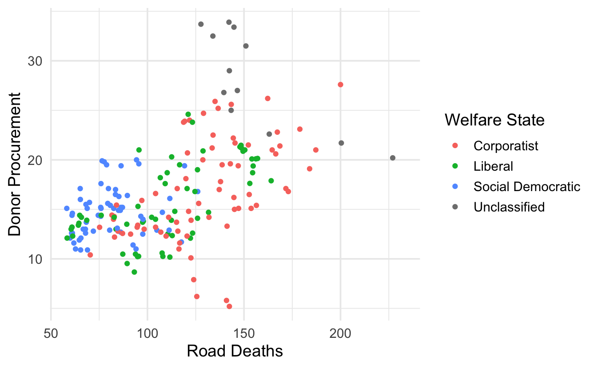
p <- ggplot(data = organdata, mapping = aes(
x = roads,
y = donors, color = world
))
p + geom_point() +
labs(
x = "Road Deaths",
y = "Donor Procurement"
) + guides(color = FALSE)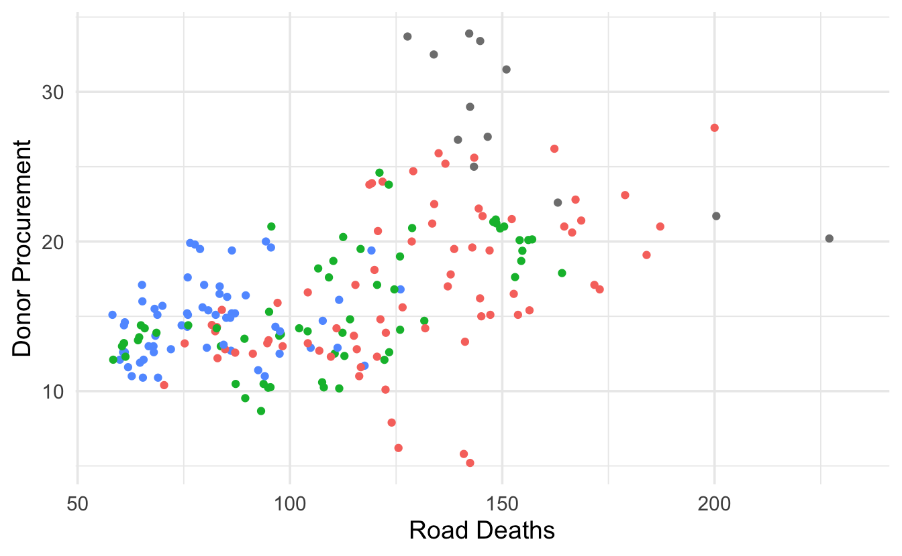
2.12 Mapping data to graphics
Download the necessary data files for the following coding exercises using usethis::use_course("css-data-mining-viz/show-the-numbers").
For this example, I’m going to use real world data to demonstrate the typical process for loading data, cleaning it up a bit, and mapping specific columns of the data onto the parts of a graph using the grammar of graphics and ggplot().
The data I’ll use comes from the BBC’s corporate charity, BBC Children in Need, which makes grants to smaller UK nonprofit organizations that work on issues related to childhood poverty. An organization in the UK named 360Giving helps nonprofits and foundations publish data about their grant giving activities in an open and standardized way, and (as of May 2020) they list data from 126 different charities, including BBC Children in Need.
If you want to follow along with this example (highly recommended!), you can download the data directly from the website.
2.12.1 Load and clean data
First, we need to load a few libraries: tidyverse (as always), along with readxl for reading Excel files and lubridate for working with dates:
# Load libraries
library(tidyverse) # For ggplot, dplyr, and friends
library(readxl) # For reading Excel files
library(lubridate) # For working with datesWe’ll then load the original Excel file. I placed this file in a folder named data in my RStudio Project folder for this example. It’s also good practice to keep a pristine, untouched copy of your data.
# Load the original Excel file
bbc_raw <- read_excel("data/360-giving-data.xlsx")There may be some errors reading the file – you can ignore those in this case.
Next we’ll add a couple columns and clean up the data a little.
We’ll extract the year from the Award Date column, rename some of the longer-named columns, and make a new column that shows the duration of grants. We’ll also get rid of 2015 since there are so few observations then.
Note the strange use of `s around column names like `Award Date`. This is because R technically doesn’t allow special characters like spaces in column names. If there are spaces, you have to wrap the column names in backticks. Because typing backticks all the time gets tedious, we’ll use rename() to rename some of the columns:
bbc <- bbc_raw %>%
# Extract the year from the award date
mutate(grant_year = year(`Award Date`)) %>%
# Rename some columns
rename(grant_amount = `Amount Awarded`,
grant_program = `Grant Programme:Title`,
grant_duration = `Planned Dates:Duration (months)`) %>%
# Make a new text-based version of the duration column, recoding months
# between 12-23, 23-35, and 36+. The case_when() function here lets us use
# multiple if/else conditions at the same time.
mutate(grant_duration_text = case_when(
grant_duration >= 12 & grant_duration < 24 ~ "1 year",
grant_duration >= 24 & grant_duration < 36 ~ "2 years",
grant_duration >= 36 ~ "3 years"
)) %>%
# Get rid of anything before 2016
filter(grant_year > 2015) %>%
# Make a categorical version of the year column
mutate(grant_year_category = factor(grant_year))2.12.2 Histograms
First let’s look at the distribution of grant amounts with a histogram. Map grant_amount to the x-axis and don’t map anything to the y-axis, since geom_histogram() will calculate the y-axis values for us:
ggplot(data = bbc, mapping = aes(x = grant_amount)) +
geom_histogram()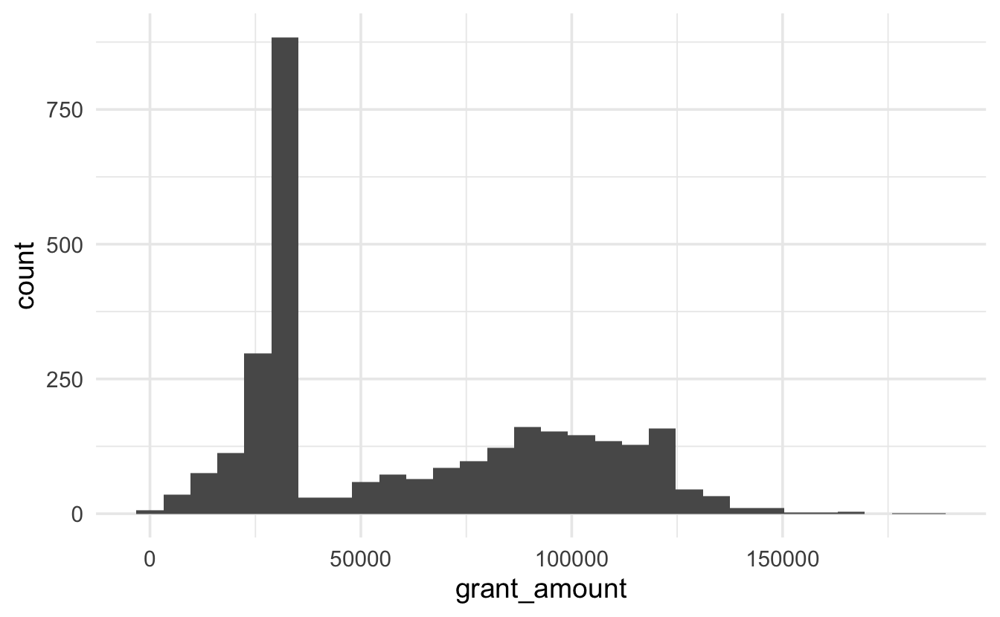
Notice that ggplot warns you about bin widths. By default it will divide the data into 30 equally spaced bins, which will most likely not be the best for your data. You should always set your own bin width to something more appropriate. There are no rules for correct bin widths. Just don’t have them be too wide:
ggplot(data = bbc, mapping = aes(x = grant_amount)) +
geom_histogram(binwidth = 100000)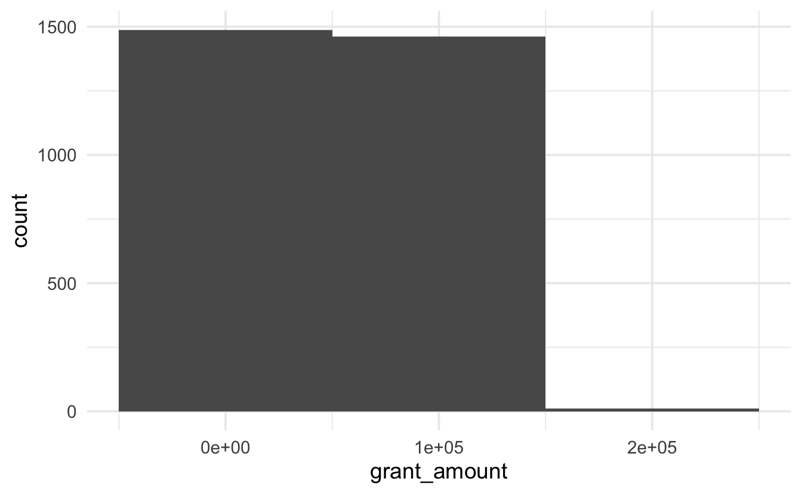
Or too small:
ggplot(data = bbc, mapping = aes(x = grant_amount)) +
geom_histogram(binwidth = 500)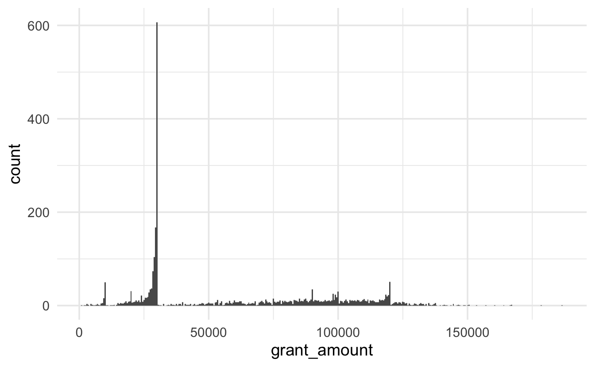
£10,000 seems to fit well. It’s often helpful to add a white border to the histogram bars, too:
ggplot(data = bbc, mapping = aes(x = grant_amount)) +
geom_histogram(binwidth = 10000, color = "white")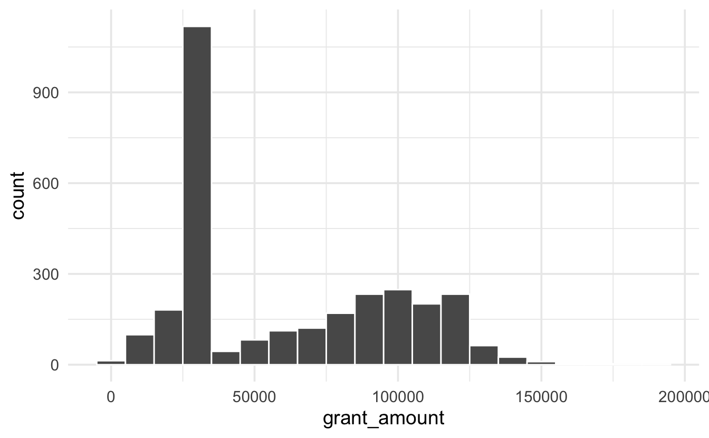
We can map other variables onto the plot, like mapping grant_year_category to the fill aesthetic:
ggplot(bbc, aes(x = grant_amount, fill = grant_year_category)) +
geom_histogram(binwidth = 10000, color = "white")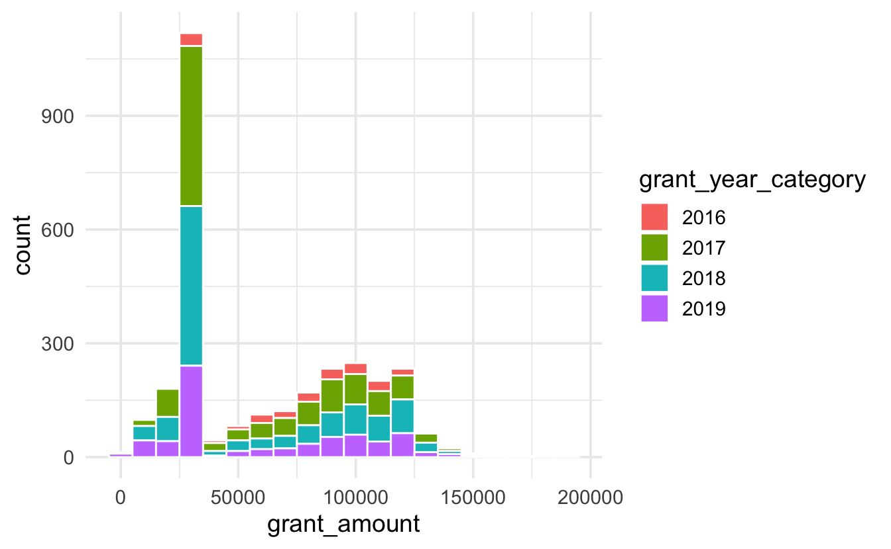
That gets really hard to interpret though, so we can facet by year with facet_wrap():
ggplot(bbc, aes(x = grant_amount, fill = grant_year_category)) +
geom_histogram(binwidth = 10000, color = "white") +
facet_wrap(vars(grant_year))Neat!
2.12.3 Points
Next let’s look at the data using points, mapping year to the x-axis and grant amount to the y-axis:
ggplot(bbc, aes(x = grant_year_category, y = grant_amount)) +
geom_point()We have some serious overplotting here, with dots so thick that it looks like lines. We can fix this a couple different ways. First, we can make the points semi-transparent using alpha, which ranges from 0 (completely invisible) to 1 (completely solid).
ggplot(bbc, aes(x = grant_year_category, y = grant_amount)) +
geom_point(alpha = 0.1)We can also randomly space the points to spread them out using position_jitter():
ggplot(bbc, aes(x = grant_year_category, y = grant_amount)) +
geom_point(position = position_jitter())One issue with this, though, is that the points are jittered along the x-axis (which is fine, since they’re all within the same year) and the y-axis (which is bad, since the amounts are actual numbers). We can tell ggplot to only jitter in one direction by specifying the height argument—we don’t want any up-and-down jittering:
ggplot(bbc, aes(x = grant_year_category, y = grant_amount)) +
geom_point(position = position_jitter(height = 0))There are some weird clusters around £30,000 and below. Let’s map grant_program to the color aesthetic, which has two categories—regular grants and small grants—and see if that helps explain why:
ggplot(bbc, aes(x = grant_year_category, y = grant_amount, color = grant_program)) +
geom_point(position = position_jitter(height = 0))It does! We appear to have two different distributions of grants: small grants have a limit of £30,000, while regular grants have a much higher average amount.
2.12.4 Boxplots
We can add summary information to the plot by only changing the geom we’re using. Switch from geom_point() to geom_boxplot():
ggplot(bbc, aes(x = grant_year_category, y = grant_amount, color = grant_program)) +
geom_boxplot()2.12.5 Summaries
We can also make smaller summarized datasets with dplyr functions like group_by() and summarize() and plot those. First let’s look at grant totals, averages, and counts over time:
bbc_by_year <- bbc %>%
group_by(grant_year) %>% # Make invisible subgroups for each year
summarize(total = sum(grant_amount), # Find the total awarded in each group
avg = mean(grant_amount), # Find the average awarded in each group
number = n()) # n() is a special function that shows the number of rows in each group
# Look at our summarized data
bbc_by_year
## # A tibble: 4 × 4
## grant_year total avg number
## <dbl> <dbl> <dbl> <int>
## 1 2016 17290488 78238. 221
## 2 2017 62394278 59765. 1044
## 3 2018 61349392 60205. 1019
## 4 2019 41388816 61136. 677Because we used summarize(), R shrank our data down significantly. We now only have a row for each of the subgroups we made: one for each year. We can plot this smaller data. We’ll use geom_col() for now.
# Plot our summarized data
ggplot(bbc_by_year, aes(x = grant_year, y = avg)) +
geom_col()
ggplot(bbc_by_year, aes(x = grant_year, y = total)) +
geom_col()
ggplot(bbc_by_year, aes(x = grant_year, y = number)) +
geom_col()Based on these charts, it looks like 2016 saw the largest average grant amount. In all other years, grants averaged around £60,000, but in 2016 it jumped up to £80,000. If we look at total grants, though, we can see that there were far fewer grants awarded in 2016—only 221! 2017 and 2018 were much bigger years with far more money awarded.
We can also use multiple aesthetics to reveal more information from the data. First we’ll make a new small summary dataset and group by both year and grant program. With those groups, we’ll again calculate the total, average, and number.
bbc_year_size <- bbc %>%
group_by(grant_year, grant_program) %>%
summarize(total = sum(grant_amount),
avg = mean(grant_amount),
number = n())
bbc_year_size
## # A tibble: 8 × 5
## # Groups: grant_year [4]
## grant_year grant_program total avg number
## <dbl> <chr> <dbl> <dbl> <int>
## 1 2016 Main Grants 16405586 86345. 190
## 2 2016 Small Grants 884902 28545. 31
## 3 2017 Main Grants 48502923 90154. 538
## 4 2017 Small Grants 13891355 27453. 506
## 5 2018 Main Grants 47347789 95652. 495
## 6 2018 Small Grants 14001603 26721. 524
## 7 2019 Main Grants 33019492 96267. 343
## 8 2019 Small Grants 8369324 25058. 334Next we’ll plot the data, mapping the grant_program column to the fill aesthetic:
ggplot(bbc_year_size, aes(x = grant_year, y = total, fill = grant_program)) +
geom_col()By default, ggplot will stack the different fill colors within the same bar, but this makes it a little hard to make comparisons. While we can see that the average small grant amount was a little bigger in 2017 than in 2019, it’s harder to compare average main grant amount, since the bottoms of those sections don’t align.
To fix this, we can use position_dodge() to tell the columns to fit side-by-side:
ggplot(bbc_year_size, aes(x = grant_year, y = total, fill = grant_program)) +
geom_col(position = position_dodge())Instead of dodging, we can also facet by grant_program to separate the bars:
ggplot(bbc_year_size, aes(x = grant_year, y = total, fill = grant_program)) +
geom_col() +
facet_wrap(vars(grant_program))We can put these in one column if we want:
ggplot(bbc_year_size, aes(x = grant_year, y = total, fill = grant_program)) +
geom_col() +
facet_wrap(vars(grant_program), ncol = 1)Finally, we can include even more variables! We have a lot of aesthetics we can work with (size, alpha, color, fill, linetype, etc.), as well as facets, so let’s add one more to show the duration of the awarded grant.
First we’ll make another smaller summarized dataset, grouping by year, program, and duration and summarizing the total, average, and number of awards.
bbc_year_size_duration <- bbc %>%
group_by(grant_year, grant_program, grant_duration_text) %>%
summarize(total = sum(grant_amount),
avg = mean(grant_amount),
number = n())
bbc_year_size_duration
## # A tibble: 21 × 6
## # Groups: grant_year, grant_program [8]
## grant_year grant_program grant_duration_text total avg number
## <dbl> <chr> <chr> <dbl> <dbl> <int>
## 1 2016 Main Grants 2 years 97355 48678. 2
## 2 2016 Main Grants 3 years 16308231 86746. 188
## 3 2016 Small Grants 3 years 884902 28545. 31
## 4 2017 Main Grants 1 year 59586 29793 2
## 5 2017 Main Grants 2 years 825732 82573. 10
## 6 2017 Main Grants 3 years 47617605 90528. 526
## 7 2017 Small Grants 1 year 10000 10000 1
## 8 2017 Small Grants 2 years 245227 18864. 13
## 9 2017 Small Grants 3 years 13636128 27716. 492
## 10 2018 Main Grants 1 year 118134 59067 2
## # … with 11 more rowsNext, we’ll fill by grant program and facet by duration and show the total number of grants awarded
ggplot(bbc_year_size_duration, aes(x = grant_year, y = number, fill = grant_program)) +
geom_col(position = position_dodge(preserve = "single")) +
facet_wrap(vars(grant_duration_text), ncol = 1)The vast majority of BBC Children in Need’s grants last for 3 years. Super neat.
2.13 Amounts and proportions
For this example, we’re going to use real world data to demonstrate some different ways to visualize amounts and proportions. We’ll use data from the CDC and the Social Security Administration about the number of daily births in the United States from 1994–2014. FiveThirtyEight reported a story using this data in 2016 and they posted relatively CSV files on GitHub, so we can download and use those.
If you want to follow along with this example, you can download the data directly from GitHub or by using these links (you’ll likely need to right click on these and choose “Save Link As…”):
2.13.1 Load data
There are two CSV files:
US_births_1994-2003_CDC_NCHS.csvcontains U.S. births data for the years 1994 to 2003, as provided by the Centers for Disease Control and Prevention’s National Center for Health Statistics.US_births_2000-2014_SSA.csvcontains U.S. births data for the years 2000 to 2014, as provided by the Social Security Administration.
Since the two datasets overlap in 2000–2003, we use Social Security Administration data for those years.
We downloaded the data from GitHub and placed the CSV files in a folder named data. We’ll then load them with read_csv() and combine them into one data frame.
library(tidyverse)
library(scales) # For nice labels in charts
births_1994_1999 <- read_csv("data/US_births_1994-2003_CDC_NCHS.csv") %>%
# Ignore anything after 2000
filter(year < 2000)
births_2000_2014 <- read_csv("data/US_births_2000-2014_SSA.csv")
births_combined <- bind_rows(births_1994_1999, births_2000_2014)2.13.2 Wrangle data
Let’s look at the first few rows of the data to see what we’re working with:
births_combined
## # A tibble: 7,670 × 5
## year month date_of_month day_of_week births
## <dbl> <dbl> <dbl> <dbl> <dbl>
## 1 1994 1 1 6 8096
## 2 1994 1 2 7 7772
## 3 1994 1 3 1 10142
## 4 1994 1 4 2 11248
## 5 1994 1 5 3 11053
## 6 1994 1 6 4 11406
## 7 1994 1 7 5 11251
## 8 1994 1 8 6 8653
## 9 1994 1 9 7 7910
## 10 1994 1 10 1 10498
## # … with 7,660 more rowsThe columns for year and births seem straightforward and ready to use. The columns for month and day of the week could be improved if we changed them to text (i.e. January instead of 1; Tuesday instead of 3). To fix this, we can convert these columns to categorical variables, or factors in R. We can also specify that these categories (or factors) are ordered, meaning that Feburary comes after January, etc. Without ordering, R will plot them alphabetically, which isn’t very helpful.
We’ll make a new dataset named births that’s based on the combined births data, but with some new columns added:
# The c() function lets us make a list of values
month_names <- c("January", "February", "March", "April", "May", "June", "July",
"August", "September", "October", "November", "December")
day_names <- c("Monday", "Tuesday", "Wednesday",
"Thursday", "Friday", "Saturday", "Sunday")
births <- births_combined %>%
# Make month an ordered factor, using the month_name list as labels
mutate(month = factor(month, labels = month_names, ordered = TRUE)) %>%
mutate(day_of_week = factor(day_of_week, labels = day_names, ordered = TRUE),
date_of_month_categorical = factor(date_of_month)) %>%
# Add a column indicating if the day is on a weekend
mutate(weekend = ifelse(day_of_week %in% c("Saturday", "Sunday"), TRUE, FALSE))
head(births)
## # A tibble: 6 × 7
## year month date_of_month day_of_week births date_of_month_categori… weekend
## <dbl> <ord> <dbl> <ord> <dbl> <fct> <lgl>
## 1 1994 January 1 Saturday 8096 1 TRUE
## 2 1994 January 2 Sunday 7772 2 TRUE
## 3 1994 January 3 Monday 10142 3 FALSE
## 4 1994 January 4 Tuesday 11248 4 FALSE
## 5 1994 January 5 Wednesday 11053 5 FALSE
## 6 1994 January 6 Thursday 11406 6 FALSEIf you look at the data now, you can see the columns are changed and have different types. year and date_of_month are still numbers, but month, and day_of_week are ordered factors (ord) and date_of_month_categorical is a regular factor (fct). Technically it’s also ordered, but because it’s already alphabetical (i.e. 2 naturally comes after 1), we don’t need to force it to be in the right order.
Our births data is now clean and ready to go!
2.13.3 Bar plot
First we can look at a bar chart showing the total number of births each day. We need to make a smaller summarized dataset and then we’ll plot it:
total_births_weekday <- births %>%
group_by(day_of_week) %>%
summarize(total = sum(births))
ggplot(data = total_births_weekday,
mapping = aes(x = day_of_week, y = total, fill = day_of_week)) +
geom_col() +
# Turn off the fill legend because it's redundant
guides(fill = FALSE)If we fill by day of the week, we get 7 different colors, which is fine (I guess), but doesn’t really help tell a story. The main story here is that there are far fewer births during weekends. If we create a new column that flags if a row is Saturday or Sunday, we can fill by that column instead:
total_births_weekday <- births %>%
group_by(day_of_week) %>%
summarize(total = sum(births)) %>%
mutate(weekend = day_of_week %in% c("Saturday", "Sunday"))
ggplot(data = total_births_weekday,
mapping = aes(x = day_of_week, y = total, fill = weekend)) +
geom_col()Neat! Those default colors are kinda ugly, though, so let’s use the principles of preattentive processing and contrast to highlight the weekend bars:
ggplot(data = total_births_weekday,
mapping = aes(x = day_of_week, y = total, fill = weekend)) +
geom_col() +
# Use grey and orange
scale_fill_manual(values = c("grey70", "#f2ad22")) +
# Use commas instead of scientific notation
scale_y_continuous(labels = comma) +
# Turn off the legend since the title shows what the orange is
guides(fill = FALSE) +
labs(title = "Weekends are unpopular times for giving birth",
x = NULL, y = "Total births")2.13.4 Lollipop chart
Since the ends of the bars are often the most important part of the graph, we can use a lollipop chart to emphasize them. We’ll keep all the same code from our bar chart and make a few changes:
- Color by weekend instead of fill by weekend, since points and lines are colored in ggplot, not filled
- Switch
scale_fill_manual()toscale_color_manual()and turn off thecolorlegend in theguides()layer - Switch
geom_col()togeom_pointrange(). Thegeom_pointrange()layer requires two additional aesthetics:yminandymaxfor the ends of the lines that come out of the point. Here we’ll setyminto 0 so it starts at the x-axis, and we’ll setymaxtototalso it ends at the point.
ggplot(data = total_births_weekday,
mapping = aes(x = day_of_week, y = total, color = weekend)) +
geom_pointrange(aes(ymin = 0, ymax = total),
# Make the lines a little thicker and the dots a little bigger
fatten = 5, size = 1.5) +
# Use grey and orange
scale_color_manual(values = c("grey70", "#f2ad22")) +
# Use commas instead of scientific notation
scale_y_continuous(labels = comma) +
# Turn off the legend since the title shows what the orange is
guides(color = FALSE) +
labs(title = "Weekends are unpopular times for giving birth",
x = NULL, y = "Total births")2.13.5 Strip plot
Let’s show all the data with points. We’ll use the full dataset now, map x to weekday, y to births, and change geom_col() to geom_point(). We’ll tell geom_point() to jitter the points randomly.
ggplot(data = births,
mapping = aes(x = day_of_week, y = births, color = weekend)) +
scale_color_manual(values = c("grey70", "#f2ad22")) +
geom_point(size = 0.5, position = position_jitter(height = 0)) +
guides(color = FALSE)There are some interesting points in the low ends, likely because of holidays like Labor Day and Memorial Day (for the Mondays) and Thanksgiving (for the Thursday). If we had a column that indicated whether a day was a holiday, we could color by that and it would probably explain most of those low numbers. Unfortunately we don’t have that column, and it’d be hard to make. Some holidays are constant (Halloween is always October 31), but some aren’t (Thanksgiving is the fourth Thursday in November, so we’d need to find out which November 20-somethingth each year is the fourth Thursday, and good luck doing that at scale).
2.13.6 Beeswarm plot
We can add some structure to these points if we use the ggbeeswarm package, with either geom_beeswarm() or geom_quasirandom(). geom_quasirandom() actually works better here since there are so many points – geom_beeswarm() makes the clusters of points way too wide.
library(ggbeeswarm)
ggplot(data = births,
mapping = aes(x = day_of_week, y = births, color = weekend)) +
scale_color_manual(values = c("grey70", "#f2ad22")) +
# Make these points suuuper tiny
geom_quasirandom(size = 0.0001) +
guides(color = FALSE)2.13.7 Heatmap
Finally, let’s use something non-traditional to show the average births by day in a somewhat proportional way. We can calculate the average number of births every day and then make a heatmap that fills each square by that average, thus showing the relative differences in births per day.
To do this, we need to make a summarized data frame with group_by() %>% summarize() to calculate the average number of births by month and day of the month (i.e. average for January 1, January 2, etc.).
We’ll then make a sort of calendar with date of the month on the x axis, month on the y axis, with heat map squares filled by the daily average. We’ll use geom_tile() to add squares for each day, and then add some extra scale, coordinates, and theme layers to clean up the plot:
avg_births_month_day <- births %>%
group_by(month, date_of_month_categorical) %>%
summarize(avg_births = mean(births))
ggplot(data = avg_births_month_day,
# By default, the y-axis will have December at the top, so use fct_rev() to reverse it
mapping = aes(x = date_of_month_categorical, y = fct_rev(month), fill = avg_births)) +
geom_tile() +
# Add viridis colors
scale_fill_viridis_c(option = "inferno", labels = comma) +
# Add nice labels
labs(x = "Day of the month", y = NULL,
title = "Average births per day",
subtitle = "1994-2014",
fill = "Average births") +
# Force all the tiles to have equal widths and heights
coord_equal() +
# Use a cleaner theme
theme_minimal()Neat! There are some really interesting trends here. Most obvious, probably, is that very few people are born on New Year’s Day, July 4th, Halloween, Thanksgiving, and Christmas.
avg_births_month_day %>%
arrange(avg_births)
## # A tibble: 366 × 3
## # Groups: month [12]
## month date_of_month_categorical avg_births
## <ord> <fct> <dbl>
## 1 December 25 6601.
## 2 January 1 7827.
## 3 December 24 8103.
## 4 July 4 8825.
## 5 January 2 9356.
## 6 December 26 9599.
## 7 November 27 9770.
## 8 November 23 9919.
## 9 November 25 10001
## 10 October 31 10030.
## # … with 356 more rowsThe days with the highest average are in mid-September, likely because that’s about 9 months after the first week of January. July 7th at #7 is odd and I have no idea why it might be so popular.
avg_births_month_day %>%
arrange(desc(avg_births))
## # A tibble: 366 × 3
## # Groups: month [12]
## month date_of_month_categorical avg_births
## <ord> <fct> <dbl>
## 1 September 9 12344.
## 2 September 19 12285.
## 3 September 12 12282.
## 4 September 17 12201.
## 5 September 10 12190.
## 6 September 20 12162.
## 7 July 7 12147.
## 8 September 15 12126.
## 9 September 16 12114.
## 10 September 18 12112.
## # … with 356 more rowsThe funniest trend is the very visible dark column for the 13th of every month. People really don’t want to give birth on the 13th.
2.14 Comparisons
For this example, we’re going to use cross-national data, but instead of using the typical gapminder dataset, we’re going to collect data directly from the World Bank’s Open Data portal
If you want to skip the data downloading, you can download the data below (you’ll likely need to right click and choose “Save Link As…”):
2.14.1 Load and clean data
First, we load the libraries we’ll be using:
library(tidyverse) # For ggplot, dplyr, and friends
library(WDI) # For getting data from the World Bank
library(geofacet) # For map-shaped facets
library(scales) # For helpful scale functions like dollar()
library(ggrepel) # For non-overlapping labelsThe World Bank has a ton of country-level data at data.worldbank.org. We can use a package named WDI (world development indicators) to access their servers and download the data directly into R.
To do this, we need to find the special World Bank codes for specific variables we want to get. These codes come from the URLs of the World Bank’s website. For instance, if you search for “access to electricity” at the World Bank’s website, you’ll find this page. If you look at the end of the URL, you’ll see a cryptic code: EG.ELC.ACCS.ZS. That’s the World Bank’s ID code for the “Access to electricity (% of population)” indicator.
We can feed a list of ID codes to the WDI() function to download data for those specific indicators. We want data from 1995-2015, so we set the start and end years accordingly. The extra=TRUE argument means that it’ll also include other helpful details like region, aid status, etc. Without it, it would only download the indicators we listed.
indicators <- c("SP.DYN.LE00.IN", # Life expectancy
"EG.ELC.ACCS.ZS", # Access to electricity
"EN.ATM.CO2E.PC", # CO2 emissions
"NY.GDP.PCAP.KD") # GDP per capita
wdi_raw <- WDI(country = "all", indicators, extra = TRUE,
start = 1995, end = 2015)
head(wdi_raw)Downloading data from the World Bank every time you knit will get tedious and take a long time (plus if their servers are temporarily down, you won’t be able to get the data). It’s good practice to save this raw data as a CSV file and then work with that.
write_csv(wdi_raw, "data/wdi_raw.csv")Then we clean up the data a little, filtering out rows that aren’t actually countries and renaming the ugly World Bank code columns to actual words:
wdi_clean <- wdi_raw %>%
filter(region != "Aggregates") %>%
select(iso2c, country, year,
life_expectancy = SP.DYN.LE00.IN,
access_to_electricity = EG.ELC.ACCS.ZS,
co2_emissions = EN.ATM.CO2E.PC,
gdp_per_cap = NY.GDP.PCAP.KD,
region, income)
head(wdi_clean)
## # A tibble: 6 × 9
## iso2c country year life_expectancy access_to_elect… co2_emissions gdp_per_cap
## <chr> <chr> <dbl> <dbl> <dbl> <dbl> <dbl>
## 1 AD Andorra 2015 NA 100 NA 41768.
## 2 AD Andorra 2004 NA 100 7.36 47033.
## 3 AD Andorra 2001 NA 100 7.79 41421.
## 4 AD Andorra 2002 NA 100 7.59 42396.
## 5 AD Andorra 2014 NA 100 5.83 40790.
## 6 AD Andorra 1995 NA 100 6.66 32918.
## # … with 2 more variables: region <chr>, income <chr>2.14.2 Small multiples
First we can make some small multiples plots and show life expectancy over time for a handful of countries. We’ll make a list of some countries chosen at random while I scrolled through the data, and then filter our data to include only those rows. We then plot life expectancy, faceting by country.
life_expectancy_small <- wdi_clean %>%
filter(country %in% c("Afghanistan", "Belarus", "India",
"Mexico", "New Zealand", "Spain"))
ggplot(data = life_expectancy_small,
mapping = aes(x = year, y = life_expectancy)) +
geom_line(size = 1) +
facet_wrap(vars(country))Small multiples! That’s all we need to do.
We can do some fancier things, though. We can make this plot hyper minimalist:
ggplot(data = life_expectancy_small,
mapping = aes(x = year, y = life_expectancy)) +
geom_line(size = 1) +
facet_wrap(vars(country), scales = "free_y") +
theme_void() +
theme(strip.text = element_text(face = "bold"))We can do a whole part of a continent (poor Iraq and Syria)
life_expectancy_mena <- wdi_clean %>%
filter(region == "Middle East & North Africa")
ggplot(data = life_expectancy_mena,
mapping = aes(x = year, y = life_expectancy)) +
geom_line(size = 1) +
facet_wrap(vars(country), scales = "free_y", nrow = 3) +
theme_void() +
theme(strip.text = element_text(face = "bold"))We can use the geofacet package to arrange these facets by geography:
life_expectancy_eu <- wdi_clean %>%
filter(region == "Europe & Central Asia")
ggplot(life_expectancy_eu, aes(x = year, y = life_expectancy)) +
geom_line(size = 1) +
facet_geo(vars(country), grid = "eu_grid1", scales = "free_y") +
labs(x = NULL, y = NULL, title = "Life expectancy from 1995–2015",
caption = "Source: The World Bank (SP.DYN.LE00.IN)") +
theme_minimal() +
theme(strip.text = element_text(face = "bold"),
plot.title = element_text(face = "bold"),
axis.text.x = element_text(angle = 45, hjust = 1))Neat!
2.14.3 Sparklines
Sparklines are just line charts (or bar charts) that are really really small.
india_co2 <- wdi_clean %>%
filter(country == "India")
plot_india <- ggplot(india_co2, aes(x = year, y = co2_emissions)) +
geom_line() +
theme_void()
plot_indiaggsave("india_co2.pdf", plot_india, width = 1, height = 0.15, units = "in")
ggsave("india_co2.png", plot_india, width = 1, height = 0.15, units = "in")china_co2 <- wdi_clean %>%
filter(country == "China")
plot_china <- ggplot(china_co2, aes(x = year, y = co2_emissions)) +
geom_line() +
theme_void()
plot_chinaggsave("china_co2.pdf", plot_china, width = 1, height = 0.15, units = "in")
ggsave("china_co2.png", plot_china, width = 1, height = 0.15, units = "in")You can then use those saved tiny plots in your text.
Both India
and China
have seen increased CO2 emissions over the past 20 years.
2.14.4 Slopegraphs
We can make a slopegraph to show changes in GDP per capita between two time periods. We need to first filter our WDI to include only the start and end years (here 1995 and 2015). Then, to make sure that we’re using complete data, we’ll get rid of any country that has missing data for either 1995 or 2015. The group_by(...) %>% filter(...) %>% ungroup() pipeline does this, with the !any(is.na(gdp_per_cap)) test keeping any rows where any of the gdp_per_cap values are not missing for the whole country.
We then add a couple special columns for labels. The paste0() function concatenates strings and variables together, so that paste0("2 + 2 = ", 2 + 2) would show “2 + 2 = 4”. Here we make labels that say either “Country name: $GDP” or “$GDP” depending on the year.
gdp_south_asia <- wdi_clean %>%
filter(region == "South Asia") %>%
filter(year %in% c(1995, 2015)) %>%
# Look at each country individually
group_by(country) %>%
# Remove the country if any of its gdp_per_cap values are missing
filter(!any(is.na(gdp_per_cap))) %>%
ungroup() %>%
# Make year a factor
mutate(year = factor(year)) %>%
# Make some nice label columns
# If the year is 1995, format it like "Country name: $GDP". If the year is
# 2015, format it like "$GDP"
mutate(label_first = ifelse(year == 1995, str_c(country, ": ", dollar(round(gdp_per_cap))), NA),
label_last = ifelse(year == 2015, dollar(round(gdp_per_cap, 0)), NA))With the data filtered like this, we can plot it by mapping year to the x-axis, GDP per capita to the y-axis, and coloring by country. To make the lines go across the two categorical labels in the x-axis (since we made year a factor/category), we need to also specify the group aesthetic.
ggplot(gdp_south_asia, aes(x = year, y = gdp_per_cap, group = country, color = country)) +
geom_line(size = 1.5)Cool! We’re getting closer. We can definitely see different slopes, but with 7 different colors, it’s hard to see exactly which country is which. Instead, we can directly label each of these lines with geom_text():
ggplot(gdp_south_asia, aes(x = year, y = gdp_per_cap, group = country, color = country)) +
geom_line(size = 1.5) +
geom_text(aes(label = country)) +
guides(color = FALSE)That gets us a little closer, but the country labels are hard to see, and we could include more information, like the actual values. Remember those label_first and label_last columns we made? Let’s use those instead:
ggplot(gdp_south_asia, aes(x = year, y = gdp_per_cap, group = country, color = country)) +
geom_line(size = 1.5) +
geom_text(aes(label = label_first)) +
geom_text(aes(label = label_last)) +
guides(color = FALSE)Now we have dollar amounts and country names, but the labels are still overlapping and really hard to read. To fix this, we can make the labels repel away from each other and randomly position in a way that makes them not overlap. The ggrepel package lets us do this with geom_text_repel()
ggplot(gdp_south_asia, aes(x = year, y = gdp_per_cap, group = country, color = country)) +
geom_line(size = 1.5) +
geom_text_repel(aes(label = label_first)) +
geom_text_repel(aes(label = label_last)) +
guides(color = FALSE)Now none of the labels are on top of each other, but the labels are still on top of the lines. Also, some of the labels moved inward and outward along the x-axis, but they don’t need to do that—they just need to shift up and down. We can force the labels to only move up and down by setting the direction = "y" argument, and we can move all the labels to the left or right with the nudge_x argument. The seed argument makes sure that the random label placement is the same every time we run this. It can be whatever number you want—it just has to be a number.
ggplot(gdp_south_asia, aes(x = year, y = gdp_per_cap, group = country, color = country)) +
geom_line(size = 1.5) +
geom_text_repel(aes(label = label_first), direction = "y", nudge_x = -1, seed = 1234) +
geom_text_repel(aes(label = label_last), direction = "y", nudge_x = 1, seed = 1234) +
guides(color = FALSE)That’s it! Let’s take the theme off completely, change the colors a little, and it should be perfect.
ggplot(gdp_south_asia, aes(x = year, y = gdp_per_cap, group = country, color = country)) +
geom_line(size = 1.5) +
geom_text_repel(aes(label = label_first), direction = "y", nudge_x = -1, seed = 1234) +
geom_text_repel(aes(label = label_last), direction = "y", nudge_x = 1, seed = 1234) +
guides(color = FALSE) +
scale_color_viridis_d(option = "magma", end = 0.9) +
theme_void()2.14.5 Bump charts
Finally, we can make a bump chart that shows changes in rankings over time. We’ll look at CO2 emissions in South Asia. First we need to calculate a new variable that shows the rank of each country within each year. We can do this if we group by year and then use the rank() function to rank countries by the co2_emissions column.
sa_co2 <- wdi_clean %>%
filter(region == "South Asia") %>%
filter(year >= 2004, year < 2015) %>%
group_by(year) %>%
mutate(rank = rank(co2_emissions))We then plot this with points and lines, reversing the y-axis so 1 is at the top:
ggplot(sa_co2, aes(x = year, y = rank, color = country)) +
geom_line() +
geom_point() +
scale_y_reverse(breaks = 1:8)Afghanistan and Nepal switched around for the number 1 spot, while India dropped from 4 to 6, switching places with Pakistan.
As with the slopegraph, there are 8 different colors in the legend and it’s hard to line them all up with the different lines, so we can plot the text directly instead. We’ll use geom_text() again. We don’t need to repel anything, since the text should fit in each row just fine. We need to change the data argument in geom_text() though and filter the data to only include one year, otherwise we’ll get labels on every point, which is excessive. We can also adjust the theme and colors to make it cleaner.
ggplot(sa_co2, aes(x = year, y = rank, color = country)) +
geom_line(size = 2) +
geom_point(size = 4) +
geom_text(data = filter(sa_co2, year == 2004),
aes(label = iso2c, x = 2003.25),
fontface = "bold") +
geom_text(data = filter(sa_co2, year == 2014),
aes(label = iso2c, x = 2014.75),
fontface = "bold") +
guides(color = FALSE) +
scale_y_reverse(breaks = 1:8) +
scale_x_continuous(breaks = 2004:2014) +
scale_color_viridis_d(option = "magma", begin = 0.2, end = 0.9) +
labs(x = NULL, y = "Rank") +
theme_minimal() +
theme(panel.grid.major.y = element_blank(),
panel.grid.minor.y = element_blank(),
panel.grid.minor.x = element_blank())If you want to be super fancy, you can use flags instead of country codes, but that’s a little more complicated (you need to install the ggflags package. See here for an example.
Acknowledgments
- Coding examples from Andrew Heiss
Session info
devtools::session_info()
## ─ Session info ───────────────────────────────────────────────────────────────
## setting value
## version R version 4.1.2 (2021-11-01)
## os macOS Monterey 12.2.1
## system aarch64, darwin20
## ui X11
## language (EN)
## collate en_US.UTF-8
## ctype en_US.UTF-8
## tz America/Chicago
## date 2022-03-04
## pandoc 2.17.1.1 @ /Applications/RStudio.app/Contents/MacOS/quarto/bin/ (via rmarkdown)
##
## ─ Packages ───────────────────────────────────────────────────────────────────
## package * version date (UTC) lib source
## assertthat 0.2.1 2019-03-21 [1] CRAN (R 4.1.0)
## backports 1.4.1 2021-12-13 [1] CRAN (R 4.1.1)
## beeswarm 0.4.0 2021-06-01 [1] CRAN (R 4.1.0)
## bit 4.0.4 2020-08-04 [1] CRAN (R 4.1.1)
## bit64 4.0.5 2020-08-30 [1] CRAN (R 4.1.0)
## bookdown 0.24 2021-09-02 [1] CRAN (R 4.1.1)
## brio 1.1.3 2021-11-30 [1] CRAN (R 4.1.1)
## broom * 0.7.12 2022-01-28 [1] CRAN (R 4.1.1)
## bslib 0.3.1 2021-10-06 [1] CRAN (R 4.1.1)
## cachem 1.0.6 2021-08-19 [1] CRAN (R 4.1.1)
## callr 3.7.0 2021-04-20 [1] CRAN (R 4.1.0)
## cellranger 1.1.0 2016-07-27 [1] CRAN (R 4.1.0)
## class 7.3-20 2022-01-13 [1] CRAN (R 4.1.1)
## classInt 0.4-3 2020-04-07 [1] CRAN (R 4.1.0)
## cli 3.2.0 2022-02-14 [1] CRAN (R 4.1.1)
## codetools 0.2-18 2020-11-04 [1] CRAN (R 4.1.2)
## colorspace 2.0-3 2022-02-21 [1] CRAN (R 4.1.1)
## crayon 1.5.0 2022-02-14 [1] CRAN (R 4.1.1)
## DBI 1.1.2 2021-12-20 [1] CRAN (R 4.1.1)
## dbplyr 2.1.1 2021-04-06 [1] CRAN (R 4.1.0)
## desc 1.4.0 2021-09-28 [1] CRAN (R 4.1.1)
## devtools 2.4.3 2021-11-30 [1] CRAN (R 4.1.1)
## digest 0.6.29 2021-12-01 [1] CRAN (R 4.1.1)
## dplyr * 1.0.8 2022-02-08 [1] CRAN (R 4.1.1)
## e1071 1.7-9 2021-09-16 [1] CRAN (R 4.1.1)
## ellipsis 0.3.2 2021-04-29 [1] CRAN (R 4.1.0)
## evaluate 0.15 2022-02-18 [1] CRAN (R 4.1.1)
## fansi 1.0.2 2022-01-14 [1] CRAN (R 4.1.1)
## farver 2.1.0 2021-02-28 [1] CRAN (R 4.1.0)
## fastmap 1.1.0 2021-01-25 [1] CRAN (R 4.1.0)
## forcats * 0.5.1 2021-01-27 [1] CRAN (R 4.1.1)
## fs 1.5.2 2021-12-08 [1] CRAN (R 4.1.1)
## gapminder * 0.3.0 2017-10-31 [1] CRAN (R 4.1.0)
## generics 0.1.2 2022-01-31 [1] CRAN (R 4.1.1)
## geofacet * 0.2.0 2020-05-26 [1] CRAN (R 4.1.1)
## geogrid 0.1.1 2018-12-11 [1] CRAN (R 4.1.0)
## ggbeeswarm * 0.6.0 2017-08-07 [1] CRAN (R 4.1.0)
## ggplot2 * 3.3.5 2021-06-25 [1] CRAN (R 4.1.1)
## ggrepel * 0.9.1 2021-01-15 [1] CRAN (R 4.1.1)
## glue 1.6.1 2022-01-22 [1] CRAN (R 4.1.1)
## gridExtra 2.3 2017-09-09 [1] CRAN (R 4.1.1)
## gtable 0.3.0 2019-03-25 [1] CRAN (R 4.1.1)
## haven 2.4.3 2021-08-04 [1] CRAN (R 4.1.1)
## here * 1.0.1 2020-12-13 [1] CRAN (R 4.1.0)
## highr 0.9 2021-04-16 [1] CRAN (R 4.1.0)
## hms 1.1.1 2021-09-26 [1] CRAN (R 4.1.1)
## htmltools 0.5.2 2021-08-25 [1] CRAN (R 4.1.1)
## httr 1.4.2 2020-07-20 [1] CRAN (R 4.1.0)
## imguR 1.0.3 2016-03-29 [1] CRAN (R 4.1.0)
## jpeg 0.1-9 2021-07-24 [1] CRAN (R 4.1.0)
## jquerylib 0.1.4 2021-04-26 [1] CRAN (R 4.1.0)
## jsonlite 1.8.0 2022-02-22 [1] CRAN (R 4.1.1)
## KernSmooth 2.23-20 2021-05-03 [1] CRAN (R 4.1.2)
## knitr * 1.37 2021-12-16 [1] CRAN (R 4.1.1)
## labeling 0.4.2 2020-10-20 [1] CRAN (R 4.1.0)
## lattice 0.20-45 2021-09-22 [1] CRAN (R 4.1.2)
## lifecycle 1.0.1 2021-09-24 [1] CRAN (R 4.1.1)
## lubridate * 1.8.0 2021-10-07 [1] CRAN (R 4.1.1)
## magrittr 2.0.2 2022-01-26 [1] CRAN (R 4.1.1)
## Matrix 1.4-0 2021-12-08 [1] CRAN (R 4.1.1)
## memoise 2.0.1 2021-11-26 [1] CRAN (R 4.1.1)
## mgcv 1.8-38 2021-10-06 [1] CRAN (R 4.1.1)
## modelr 0.1.8 2020-05-19 [1] CRAN (R 4.1.0)
## munsell 0.5.0 2018-06-12 [1] CRAN (R 4.1.0)
## nlme 3.1-155 2022-01-13 [1] CRAN (R 4.1.1)
## pillar 1.7.0 2022-02-01 [1] CRAN (R 4.1.1)
## pkgbuild 1.3.1 2021-12-20 [1] CRAN (R 4.1.1)
## pkgconfig 2.0.3 2019-09-22 [1] CRAN (R 4.1.0)
## pkgload 1.2.4 2021-11-30 [1] CRAN (R 4.1.1)
## png 0.1-7 2013-12-03 [1] CRAN (R 4.1.0)
## prettyunits 1.1.1 2020-01-24 [1] CRAN (R 4.1.0)
## processx 3.5.2 2021-04-30 [1] CRAN (R 4.1.0)
## proxy 0.4-26 2021-06-07 [1] CRAN (R 4.1.0)
## ps 1.6.0 2021-02-28 [1] CRAN (R 4.1.0)
## purrr * 0.3.4 2020-04-17 [1] CRAN (R 4.1.0)
## R6 2.5.1 2021-08-19 [1] CRAN (R 4.1.1)
## Rcpp 1.0.8 2022-01-13 [1] CRAN (R 4.1.1)
## readr * 2.1.2 2022-01-30 [1] CRAN (R 4.1.1)
## readxl * 1.3.1 2019-03-13 [1] CRAN (R 4.1.0)
## remotes 2.4.2 2021-11-30 [1] CRAN (R 4.1.1)
## reprex 2.0.1 2021-08-05 [1] CRAN (R 4.1.1)
## rgdal 1.5-28 2021-12-15 [1] CRAN (R 4.1.1)
## rgeos 0.5-9 2021-12-15 [1] CRAN (R 4.1.1)
## RJSONIO 1.3-1.6 2021-09-16 [1] CRAN (R 4.1.1)
## rlang 1.0.1 2022-02-03 [1] CRAN (R 4.1.1)
## rmarkdown 2.11 2021-09-14 [1] CRAN (R 4.1.1)
## rnaturalearth 0.1.0 2017-03-21 [1] CRAN (R 4.1.0)
## rprojroot 2.0.2 2020-11-15 [1] CRAN (R 4.1.0)
## rstudioapi 0.13 2020-11-12 [1] CRAN (R 4.1.0)
## rvest 1.0.2 2021-10-16 [1] CRAN (R 4.1.1)
## sass 0.4.0 2021-05-12 [1] CRAN (R 4.1.0)
## scales * 1.1.1 2020-05-11 [1] CRAN (R 4.1.0)
## sessioninfo 1.2.2 2021-12-06 [1] CRAN (R 4.1.1)
## sf 1.0-6 2022-02-04 [1] CRAN (R 4.1.1)
## socviz * 1.2 2020-06-10 [1] CRAN (R 4.1.0)
## sp 1.4-6 2021-11-14 [1] CRAN (R 4.1.1)
## stringi 1.7.6 2021-11-29 [1] CRAN (R 4.1.1)
## stringr * 1.4.0 2019-02-10 [1] CRAN (R 4.1.1)
## testthat 3.1.2 2022-01-20 [1] CRAN (R 4.1.1)
## tibble * 3.1.6 2021-11-07 [1] CRAN (R 4.1.1)
## tidyr * 1.2.0 2022-02-01 [1] CRAN (R 4.1.1)
## tidyselect 1.1.2 2022-02-21 [1] CRAN (R 4.1.1)
## tidyverse * 1.3.1 2021-04-15 [1] CRAN (R 4.1.0)
## tzdb 0.2.0 2021-10-27 [1] CRAN (R 4.1.1)
## units 0.8-0 2022-02-05 [1] CRAN (R 4.1.1)
## usethis 2.1.5 2021-12-09 [1] CRAN (R 4.1.1)
## utf8 1.2.2 2021-07-24 [1] CRAN (R 4.1.0)
## vctrs 0.3.8 2021-04-29 [1] CRAN (R 4.1.0)
## vipor 0.4.5 2017-03-22 [1] CRAN (R 4.1.0)
## viridisLite 0.4.0 2021-04-13 [1] CRAN (R 4.1.0)
## vroom 1.5.7 2021-11-30 [1] CRAN (R 4.1.1)
## WDI * 2.7.6 2022-02-25 [1] CRAN (R 4.1.1)
## withr 2.4.3 2021-11-30 [1] CRAN (R 4.1.1)
## xfun 0.29 2021-12-14 [1] CRAN (R 4.1.1)
## xml2 1.3.3 2021-11-30 [1] CRAN (R 4.1.1)
## yaml 2.3.5 2022-02-21 [1] CRAN (R 4.1.1)
##
## [1] /Library/Frameworks/R.framework/Versions/4.1-arm64/Resources/library
##
## ──────────────────────────────────────────────────────────────────────────────